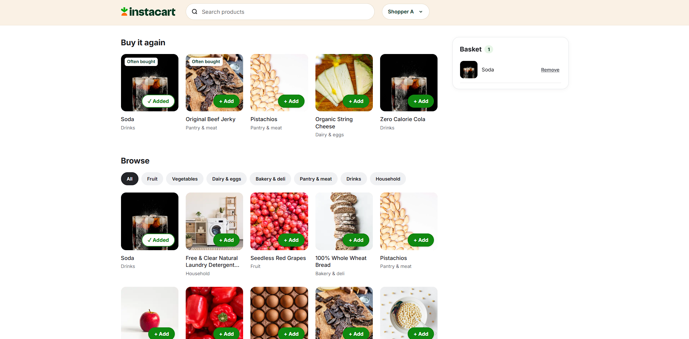

I'm building a recommendation system using Instacart's past orders. The aim is to find useful suggestions, compare a few approaches and explain what works.
What we're testing
Can personal purchase history beat a general popularity list?
Instacart released a historical sample of grocery orders. The working files came from a documented archive because the original download isn't accessible. Source notes →
This is an independent portfolio project. Matching a later basket doesn't prove the recommendations would increase sales or save shoppers time. That needs a real test.
The main deliverable is a Streamlit app with a performance dashboard. Power BI is optional.
Learning path
Project status
Complete as a learning project and local prototype — 23 October 2026. The checklist below retains the original learning goals. Checked items have supporting records; unchecked items remain optional practice or future research/release work. They aren't all requirements for closing this project.
Complete the five-method comparison and record the weighted-recency decision.
Build the local prototype and record both exploratory user sessions and their limits.
Test one Version 2 timing rule and stop when it fails the fixed development criteria.
Add the timing result, final decision and lessons to the case study and learning notes.
Keep untested work visible and separate portfolio/publishing from this completed scope.
The route
Stage
What I'll leave with
1. Define the problem
A clear shopper problem and a small first version
2. Understand the data
A simple explanation of the tables and their limits
3. Check the preparation
Confidence in how the analysis tables were made
4. Explore buying patterns
Observations supported by numbers
5. Plan a fair test
Agreed metrics and hidden baskets
6. Build simple methods
Popular and personal recommendations
7. Try machine learning
A challenger to the simpler methods
8. Make the decision
An honest comparison and a chosen method
9. Build the demo
A working HTML prototype; comparisons in the guide
10. Review product value
Prototype feedback and a proposed real-world test
11. Document the work
A case study, local run instructions and clear remaining checks
1. Define the problem
Output: a short product brief.
Choose rebuying familiar products as the first-version focus.
Distinguish better prediction from proof of customer benefit.
Describe the target shopper and the situation we're trying to improve.
Separate known evidence from assumptions about searching and shopping effort.
Define what the first version will include and leave out.
Agree on success measures and the biggest risks.
Set numeric success targets and define the prototype-test procedure before final decisions.
2. Understand the orders
Output: explain one customer's baskets in plain English.
Explain the difference between a user, an order and a product line.
Explain what reordered = 1 means.
Explain why 30 means 30 or more days.
Follow one user's first few baskets in the actual data.
Learn why add_to_cart_order isn't a record of abandoned carts.
Explain why the first gap between orders is blank.
Learn the difference between prior, train and test orders.
Identify what's missing: prices, quantities, browsing and recommendation exposure.
3. Check the data preparation
Output: a data-check summary I can explain.
Review where the files came from, their usage terms and saved file checks.
Review table keys, joins and the risk of accidentally multiplying rows.
Review missing values, duplicates, links between tables and row counts.
Check which orders have known contents before calculating a rate.
Trace a raw record into a prepared table using SQL or Python.
Review the preparation script and verification results; understand how to rerun them.
4. Explore buying patterns
Output: a few useful observations, with evidence and limits.
Compare basket sizes and available history across validation customer groups.
Explore the distribution of gaps between orders.
Compare product and department counts and repeat-purchase shares.
Practise stating order, customer and product-line denominators in our worked examples.
Choose a minimum sample size before highlighting products.
Check whether frequent shoppers or a few popular products dominate the story.
Write findings together, separating observations from possible explanations.
5. Plan a fair test
Output: a written evaluation plan before final scoring.
Explain why a later basket must stay hidden when making recommendations.
Understand precision and recall.
Review the exact training, validation and final-evaluation history cutoffs.
Set candidate products, eligible users and rules for short recommendation lists.
Cover Hit Rate at 5 and per-customer averaging in the scoring walkthrough.
Use Recall@5 as the working primary measure, with precision and hit rate alongside it.
Agree on a worthwhile improvement threshold before choosing the final method.
Discuss coverage, speed and complexity trade-offs, including saved suggestions.
Set measurable coverage and response-time requirements before final decisions.
Check that compared methods use the same customers and hidden baskets.
6. Build simple recommendations
Output: working methods and saved validation scores.
Define popularity as the percentage of eligible past orders containing each product.
Explain frequency, recency and purchase timing using examples.
Decide what new customers see when they have no purchase history.
Build the five-product popularity baseline using eligible history only.
Build a personal-frequency method from each customer's earlier purchases.
Use purchase recency to break frequency ties, with product ID as the final tie-break.
Try giving recent purchases more weight and define how ties are handled.
Check examples manually and handle customers with fewer than five candidates.
Compare personal frequency and the fixed weighted-recency refinement on validation baskets only.
7. Try a machine-learning challenger
Output: one model that earns its place through a fair comparison.
Explain the prediction target and which products the model can choose from.
Build input features from eligible earlier orders only.
Understand training examples, labels and the risk of leaking future information.
Train a suitable first model and rank five suggestions per customer.
Explain that we choose the clues and the model learns their weights.
Distinguish using answers during training from checking predictions afterward.
Explain training-only scaling and reusing the same ruler during validation.
Explain regularisation and the risk of fitting quirks in training examples.
Walk through the script: read, learn, predict, select five, check and save.
Compare the first fixed logistic model with weighted recency on matching validation baskets.
Explain decision-tree questions and how boosting combines small-tree adjustments.
Run one fixed boosted-tree challenger with the same inputs and validation rules.
Stop additional tuning for version one and select the tested weighted-recency rule; retain ML challengers as comparison evidence.
Explain important signals and review mistakes; don't treat them as causal explanations.
A simpler method can win. A more complicated model isn't automatically a better product.
8. Compare results and choose
Output: a decision supported by results and trade-offs.
Document the fixed methods, final history cutoffs, frozen ML comparators and reporting procedure before final scoring.
Generate, independently check and freeze all five methods' final predictions before reading final product answers.
Score the saved lists after fingerprint checks, independently verify matches and report final results separately from validation.
Calculate the validation precision, recall and hit-rate comparison on matching users.
Calculate paired validation score differences and approximate uncertainty intervals.
Discuss the practical size of the accuracy gain alongside explanation and maintenance effort.
Interpret the uncertainty before locking a final method.
Compare the simple methods across the agreed history-length groups.
Compare product coverage, top-ten concentration and short lists for weighted recency and both ML challengers.
Compare all three personal methods by actual basket size and explain the five-suggestion recall limit.
Compare individual customers with more, equal or fewer matching suggestions.
Compare method complexity, explainability and maintenance needs.
Compare all three personal methods on warm local scoring/ranking, including logistic scaling, with data loading and saved-list retrieval separate.
Measure full app response time once the app exists.
Choose weighted recency for the version-one demo and record the iteration, alternatives and trade-offs before final results.
9. Build the demo
Output: an interactive HTML prototype, with comparisons in the project guide.
Build a simple A/B/C shopper flow with up to five saved suggestions.
Connect two real historical examples without exposing target-basket answers as inputs; label simulated C in the project documentation.
Document the method choice and comparison outside the shopper interface, as requested.
Implement Add/remove, exact-product Hide, Undo, Show again, short and empty lists and a no-history fallback.
Check these rules and the custom shopper selector through JavaScript logic checks.
Record Justin's successful narrow-window layout check for search, Add and Basket.
Record Justin's successful basic Tab/Enter keyboard check for search, Add and Basket.
Review remaining responsive sizes, all keyboard controls and loading/error states; the basic checks aren't a full accessibility audit.
Measure full app response time; prepared-input benchmarks aren't app latency.
Review the hosted example data and usage requirements before public deployment.
The current prototype is HTML; no Streamlit rebuild or Power BI dashboard is required. Screenshots must come from the real page. The browser tool currently blocks local file URLs, so assistant-captured screenshots and full visual review remain restricted. The owner-supplied desktop screenshot is saved.
10. Review the product idea
Output: feedback notes and a proposed live experiment.
Record the initial informal trial report and its limits; no measured completion rate or timings.
Separate informal prototype feedback from evidence of value to grocery shoppers.
Prioritise changes by user value, effort and evidence.
Prepare a small comparison pilot for find/add time, completion, wrong additions and help; distinguish it from a live experiment.
Record the first timed pilot transcript and its assistance/practice limitations.
Complete the planned comparison with verified conditions, baskets and help records before assessing benefit.
Explain why we haven't proved revenue growth or time savings with historical orders.
Record limitations, open questions and the next product decision.
11. Finish the project and case study
Output: a project someone else can understand, run and discuss.
Review local instructions, file links, pinned dependencies, launcher targets and safe imports without rebuilding results.
Independently reproduce the analysis setup and main outputs in a separate environment without overwriting frozen artifacts.
Keep raw data, detailed prepared data and the virtual environment out of public Git history.
Add source attribution, usage notes and clear prototype instructions.
Write the case study: problem, choices, evidence, result, trade-offs and next steps.
Review the final narrative against saved scores, both pilot records, the actual screenshot and remaining release checks.
Write a short prototype walkthrough in README.
Save the supplied desktop screenshot with an added product and basket, and include it in the case study.
Capture phone and Hide/Undo views if needed for the final presentation.
Prepare portfolio and resume wording after the remaining project work, as requested.
Practise explaining the project and answering questions about the choices.
Review deployment requirements and publish when requested.
12. Version 2: purchase timing
Output: an honest comparison of a timing-aware rule and the Version 1 baseline.
Check metadata for a separate customer cohort and disclose prior dataset exposure.
Understand typical purchase gaps, irregular repeats and unavailable timing clues.
Fix one timing-aware rule, sparse-history fallback and prospective improvement criteria; distinguish project choices from business-agreed targets.
Create and freeze a customer-disjoint 60,000/15,000 development/audit split and cutoff-safe plan.
Build and check timing inputs from earlier history, including raw-record samples and synthetic cutoff/fallback checks.
Compare the fixed timing challenger against weighted recency on 60,000 development baskets.
Stop the first attempt after its development gate failed; retain the result and leave the reserved audit unscored.
For any later justified attempt, fix a new plan and save audit predictions before inspecting audit product answers.
Run and report an audit only for a candidate that passes its fixed development gate; no audit result exists for this attempt.
Update the prototype only if a later candidate earns its place; no change justified by the first attempt.
Throughout the project
Keep the task board and decision log useful; update them when the work changes.
Learn SQL, Python, AI tools and skills through the tasks where they're needed.
Save useful explanations in Learning notes and the AI tools log.
Record what I understand and what I still need to practise. Don't repeat quizzes I've already covered unless I ask.
Optional next steps
The project is wrapped up. Portfolio presentation can come next when requested. A new model experiment, controlled user study or public release needs its own scope; none runs automatically. The timing candidate stayed unscored on audit. The separately authorised Version 3 discovery audit is now complete; those answers are exposed. Unchecked lessons can be revisited without repeating everything already covered.
13. Version 3: product discovery — active extension
The earlier completion statement applies to V1 and the first V2 experiment. Justin has now authorised this separate extension.
Define discovery separately from rebuying and keep the existing feature intact.
Check earlier-history availability and prepare the general-popularity ranking.
Implement and verify filtering of every shopper's previously bought products.
Build one related-product challenger and fix its settings and fallback.
Fix discovery-specific metrics and adoption criteria before scoring.
Compare methods on matching development targets and report prior answer exposure.
Review development evidence and authorise a separate reserved discovery audit.
Fix the audit plan, freeze suggestions before answers and score unchanged methods.
Verify and record audit results and mark the reserved answers as now exposed.
Review the audit outcome together and decide the discovery prototype scope.
Build the authorised separate discovery row and check its data and interaction logic.
Visually review and user-test discovery; don't treat offline scores as customer benefit.
One customer can place several orders. Each order can contain several products. That's why the data comes in linked tables rather than one row per person.
If one order contains milk, bread and eggs, it's one order with three product lines. The data doesn't tell me how many cartons of milk were bought.
IDs are anonymous labels. An order ID identifies an order; a user ID groups the provided order history. Neither identifies a real person's name.
Columns worth knowing
order_number tells me where the order sits in that user's sequence. Order 3 means their third provided order, not 3 products.
reordered is 1 when that user has bought the product before, and 0 otherwise. It refers to any earlier order, not necessarily the immediately previous one.
add_to_cart_order is the position of the product within the purchased basket. A value of 2 means it was the second product added. It isn't the number of cart actions and doesn't show products that were abandoned.
days_since_prior_order is the recorded gap since the previous order. It's blank for the first order. The value is capped at 30, so a value of 30 can mean 30 days or more. I'll keep that distinction when describing shopping frequency.
order_dow is a day-of-week code from 0 to 6. I'll keep those codes rather than assume which number means Monday or Sunday. order_hour_of_day runs from 0 to 23. Neither column gives an actual calendar date or a verified time zone.
Prior, train and test
Label
How I'll use it
prior
Earlier orders with known product contents. These form the purchase history.
train
A user's final order with known contents. I'll hold it back for a later check of the recommendations.
test
A user's final order whose contents aren't provided. I can't score a recommendation against it.
An unknown test basket isn't an empty basket. Its product counts stay blank, not zero. Users have either a train or test final order in this release.
Prepared files
File
What's inside
instacart.duckdb
Original prepared database, retained; its engine is currently blocked by Windows on this computer
instacart_ml.sqlite
Current SQLite source cache and checked training/validation features; contains earlier orders, not final basket contents
products.csv
Product names joined to aisle and department labels
order_summary.parquet
One row per order, including known basket size and repeat-product count
product_history_metrics.csv
One row per product, with counts from prior orders only
department_history_metrics.csv
One row per department, with prior-order counts
evaluation_plan.csv
One labelled user, with the earlier validation order and final target order identified
learning_orders.csv
One selected user's order sequence for teaching
learning_order_items.csv
Products in that user's first three orders, with readable names
order_summary_sample.csv
A small preview of order_summary
Parquet is a compact table format. DuckDB can read it directly, so there's no need to open millions of rows in Excel. The learning examples are selected for explanation and aren't a representative sample.
Counting and evaluation rules
Name the counting unit first
Orders, product lines and users answer different questions. I'll name the unit beside every measure and avoid treating a product-line count as a count of items by quantity.
Descriptive measures
Measure
Calculation
What it tells me
Basket size
Product lines in one known order
Number of different product entries, not units purchased
Repeat-line share
Lines with reordered = 1 / all product lines
Share of purchased product lines that repeat an earlier purchase
Product buyers
Distinct user IDs buying the product
Tracked users with that product in the chosen history
Product order count
Distinct orders containing the product
How often the product appears in recorded baskets
Repeat-line share isn't the percentage of customers who return. It also isn't the chance that someone buys the product in their next order. Those need different denominators and observation rules.
The prepared product and department summaries use prior orders only. I'll calculate combined shares from summed counts, not by averaging product percentages. A zero denominator gives a blank rate.
How the later recommendation check will work
The working plan is to offer five products per user and compare the lists with labelled later baskets. For each user:
Precision at 5: how many of the five suggested products appear in the actual basket, divided by 5. An unfilled slot doesn't earn a hit.
Recall at 5: correctly suggested products divided by all distinct products in the actual basket.
Hit rate at 5: whether at least one suggestion appears in the basket. Across users, it's users with a hit divided by evaluated users.
I'll average user-level scores so customers with large baskets don't silently dominate the result. Both methods must use the same users and target baskets. These metrics describe overlap with later recorded purchases, not extra sales caused by recommendations.
Keep later answers out of earlier decisions
For each labelled user, the last prior order is set aside for trying ideas. Only orders before it can supply validation features, popularity lists or candidate products. The final train-labelled basket stays separate until the method is fixed.
After choosing the method, all prior orders can supply history for the final check. The final train basket still can't be used as an input. Test baskets have unknown contents, so they're excluded from scoring rather than treated as missed purchases.
The ready-made product summaries include every prior order. They're useful for describing history but aren't safe validation inputs because they include validation targets. For the final popularity baseline, rebuild counts from the fixed evaluation cohort and allowed earlier-history cutoffs rather than blindly using the full-cohort summaries.
Compare fairly
I'll choose minimum sample sizes before highlighting products, look at differences in available history, and keep any later method changes separate from the final check. I can also report performance on repeat products as a separate measure, with its own denominator.
The data doesn't have prices, quantities, profit or recommendation exposure. I won't turn an offline score into a claim about revenue lift or customer satisfaction. A real app test would need its own success metric and checks for unwanted effects.
Data source
The dataset was released by Instacart in 2017. The working CSVs were retrieved on 20 October 2026 from an archived copy on Zenodo because the original S3 download returned an access error.
The archive's published checksums are used to check the downloaded files. Source URLs, hashes and retrieval details are in 05_Results/03_Checks/source_manifest.json.
Instacart describes the release as a selected, biased sample. Conclusions will stay specific to these records. This is local, non-commercial learning work. I'll keep raw files and detailed prepared data out of a public repository and review the original terms before sharing results or any artifact that could expose row-level data.
Visual style
The guide keeps the readable layout from the earlier project, using colours from the Instacart brand guide:
Colour
Hex
Use here
Kale
#003D29
Headings, links and buttons
Cashew
#FAF1E5
Sidebar and selected reading areas
Honeydew
#C5FF96
Selected navigation and small highlights
Carrot
#FF7009
A small decorative accent
Cashew 80
#32302E
Body text
Cashew 60
#716C67
Supporting text
Cashew 30
#E1D9CE
Borders
Cashew 050
#FDF8F2
Light surfaces
Carrot and Lime are accent colours in the guide, so they won't become body text or large reading backgrounds. Buttons use a rounded shape. The page uses a system-font fallback rather than assuming access to Instacart's custom typeface.
The page is an independent portfolio project. Its design doesn't imply Instacart created, reviewed or endorsed the analysis.
Preparation record
The source tables have been loaded and checked. These are preparation results, not conclusions about customers.
What's in the files?
Source table
Rows
orders
3,421,083
products
49,688
aisles
134
departments
21
order_products__prior
32,434,489
order_products__train
1,384,617
There are 206,209 tracked users. The order table includes 3,214,874 earlier orders, 131,209 labelled final orders and 75,000 final orders whose contents aren't provided.
What was checked?
All six downloaded files match the checksums published by the archive. The preparation also checks unique table keys, order-product pairs, links between tables, split labels, valid codes, cart positions and consecutive order numbers. The structural checks passed. The detailed results are in preparation_report.json.
No source rows were removed or filled in. Unknown test contents stay blank. Missing category labels remain visible rather than being guessed.
What needs care?
The first order's gap is expected to be blank. The value 30 means 30 days or more. Day-of-week codes stay 0–6, and no actual calendar dates or time zone are assumed.
Instacart says the release isn't representative of its entire business. The data doesn't show prices, quantities, abandoned carts or recommendation exposure. Results will describe this sample and any offline comparison, not proven business impact.
Ready for later evaluation
There are 131,209 users with labelled final baskets. evaluation_plan.csv identifies an earlier basket for validation and a later target for the final check. Any validation inputs must stop before the earlier target; the full prior-history summaries include that target and aren't valid early-cutoff features.
These preparation checks describe the input data. Three simple methods and two ML challengers have since been validation-tested. Weighted recency is selected for version one; final evaluation is still ahead.
Fixed final-evaluation plan — 22 October 2026
The simple version
The first-version choice is already made: weighted recency. We will now predict one later basket per customer with the method fixed, then open the answers and check the predictions. We won't use the final results to secretly keep improving this version.
Keep the same 131,209 customers identified in evaluation_plan.csv.
Use each customer's allowed earlier orders to prepare new final-prediction clues.
Generate and save every method's predictions before opening final product answers.
Check those predictions against the labelled final baskets.
Report the result, including any weakness, without selecting a new winner from the final scores.
For customer 1, our existing metadata gives validation order 10 and final order 11. Final inputs can use orders 1–10. Order 10 was once the hidden validation basket; it is now legitimate earlier history for predicting order 11. The answer in order 11 still can't become a clue.
Fixed cohort, history and candidates
Use all 131,209 rows of the existing evaluation plan, one final target per customer. Target ID is final_target_order_id; the maximum allowed earlier order number is final_history_max_order_number. Verify every target belongs to the same customer, is labelled train and occurs immediately after its allowed history. Unknown official test contents aren't scored, treated as empty or used as negative labels.
Build final features only from that customer's prior orders at or before the cutoff. Use all eligible history through that cutoff, including the former validation basket. No target products, final basket size or final reordered flags may enter a feature, candidate rule, popularity count or tie-break. The five ML input columns and definitions remain unchanged. Personal candidates are distinct products bought in eligible earlier orders; each method can choose at most five, with no unfamiliar filler.
Fixed methods and ML handling
Method
Final-prediction rule
General popularity
Recalculate product counts from eligible prior orders for the same evaluation cohort only. Rank by distinct-order share; ties by product ID ascending. Same five products for everyone.
Personal frequency
Recalculate counts/latest purchase at the final history cutoff; purchase count descending, latest purchase descending, then product ID ascending.
Weighted recency — selected default
Same fixed five-order half-life, sum and round to 12 decimals; score descending, latest purchase descending, then product ID ascending.
Logistic regression — comparator
Reuse the original saved scaler and learned weights. Transform the new final-history features with that scaler, predict, and rank by score descending, latest purchase descending, then product ID ascending.
Boosted trees — comparator
Reuse the original saved 100-tree model and settings. Score the same new final-history feature rows and use the same score/latest/product tie-break.
No ML refit. We are checking the existing learned models on a later target, with refreshed history clues. Additional history changes the inputs, not the trained scaler/weights/trees. No new feature selection, half-life change, setting search or automatic early-stopping choice. General popularity can choose unfamiliar products; disclose that candidate difference from the four personal methods.
The offline check has no Hide choices or simulated exposure. Planned app controls aren't used to manufacture evaluation gains. The no-history fallback isn't measured as new-customer effectiveness here.
Save predictions before scoring
The implementation must have a prediction stage that never opens the final product-answer table/file. It may read target IDs/order metadata from the saved plan, not target product contents. Save prediction lists and a run record containing method settings, feature order, source/model/code fingerprints and target/cohort identifiers. Hashing source bytes is an integrity check, not use of answer values.
Before unlocking scoring, check all customers are represented, each personal suggestion belongs to eligible earlier history, ranks/products are unique and list lengths equal min(5, candidates). Check no feature order number exceeds its cutoff. Independently reconstruct features/ranks for 100 fixed customers, where practical. Check frozen ML predictions match saved model arithmetic/reload and that their learned state hasn't changed.
Only after those checks and saved predictions, read order_products__train.csv for the plan's target IDs. Verify unique order-product pairs, complete target coverage and nonempty known baskets. Don't let answer-reading recalculate or replace predictions. The original source preparation already performed file/table integrity checks; 'held back' here means not used to tune/select/score methods, not a claim that no parser has ever read source bytes.
Metrics and reports fixed before answers
Primary: mean per-customer Recall@5, matches / distinct actual basket products. Supporting: mean Precision@5 (matches / five, even on short lists), Hit Rate@5 and mean match count. Include all matching customers rather than filtering after seeing performance.
The primary relative comparison is selected weighted recency versus personal frequency. Also report popularity and both frozen ML comparators on matching final targets. Show paired mean differences and approximate 95% intervals using the customer-level difference mean plus/minus 1.96 times its sample standard deviation divided by the square root of the number of customers. These assume independent customer identifiers; they aren't guarantees about all shoppers or causal effects.
Reuse existing groups, without choosing flattering new cutoffs: eligible history 1–5, 6–15, 16+ orders; actual final basket products 1–5, 6–10, 11–20, 21+. Final basket size is diagnostic only. Report group counts and reconcile weighted group means with overall metrics. Review more/same/fewer matches, short lists, distinct-product coverage and each method's own top-ten concentration. Name the denominator beside each percentage. Group summaries remain exploratory.
Report this final check separately from validation. No final score is available yet. Local benchmark timings remain a separate warm prepared-input test; don't convert total final-scoring time into shopper wait time.
What happens after the result
The +0.5 percentage-point working target was introduced for the tree experiment after earlier validation work; don't relabel it a pre-registered final-score threshold or live product-success rule. There is no invented absolute recall level that proves shopper benefit.
If technical checks fail, stop rather than publish a passing result. If the selected method's final predictive evidence is weak, report that weakness and reassess the project honestly; don't quietly tune or promote a comparator using these same final answers. A future iteration needs a newly separated holdout or new data. Technical bug fixes after scoring require disclosure of what was seen, what changed and whether the check is still a fresh evaluation.
This is a per-customer order-sequence test, not a calendar-time deployment simulation: actual dates aren't provided. The sample has representativeness limits, repeated known customers and no browsing/exposure/price/quantity data. Even a strong final prediction result can't establish time saved, sales lift or shopper satisfaction.
Status: procedure documented; prediction/scoring code not run for final targets. The next implementation step is the prediction-only stage and its checks.
Version 3 walkthrough: from an idea to the shopping page
Status: the recommendation comparison and first prototype are built. Visual review and discovery user testing are still open. This chapter records the implementation; it doesn't mean I've already understood or independently practised every step. We can work through it together without building another model.
1. Why we added this version
Version 1 answers: “What might this shopper want to buy again?” It only recommends familiar products. Version 2 tested whether usual purchase gaps could improve that ranking; the first timing rule added too little value, so we stopped it.
Version 3 asks a different question: “What unfamiliar products might fit this shopper's past purchases?” We kept this in a separate You might also like section. New means absent from the history we have, not something the person has never bought anywhere.
2. Which data went in
We reused the existing Instacart order data. The development group contained 60,000 shoppers, 876,349 earlier orders and 8,838,134 product lines. A shopper can have many orders, and each order contains many products; that's why the record count is much larger than the shopper count.
Another 15,000 shoppers were reserved for the final discovery check. For each shopper, we used earlier orders as clues and the last known prior basket as the answer. Their official final test baskets still have unknown contents.
Development answers had already been inspected during Version 2. We disclosed that reuse instead of calling this a brand-new untouched experiment. The reserved discovery check was run later under a separate written plan. It is now used too.
3. Our starting comparison: popular unfamiliar products
A baseline is a simple method that gives another method something to beat.
We counted how many eligible earlier orders contained each product and divided by all eligible earlier orders. Then, for each shopper, we removed every product already in their history and chose the top three remaining products.
Made-up example: the general list starts with bananas, milk, eggs and apples. If this shopper already bought bananas and eggs, those products are removed before suggestions are selected. The final list isn't necessarily identical for everyone, because their exclusions differ.
4. How we found related products
We built connections between products using shared buyers. Each shopper counts once for each product in this calculation, even if they bought it repeatedly. This differs from the popularity baseline, which counts orders.
Made-up example: 100 shoppers bought pasta, 100 bought sauce, and 40 bought both. That overlap provides a possible connection. It doesn't prove they ate them together or that every pasta buyer wants sauce.
We adjusted the overlap for each product's popularity:
connection strength = shared buyers / square root(buyers of product A × buyers of product B)
For the made-up numbers above: 40 / square root(100 × 100) = 0.4. That is a similarity score, not a 40% chance of buying. This calculation is called cosine similarity on buyer lists. The broader approach is item-to-item collaborative filtering: recommend products using patterns across people's purchases.
We fixed these choices before scoring this discovery attempt:
Choice
What it means
Why it was included
At least 50 buyers per product
Very rare products don't form similarity links
Avoid relying on extremely sparse evidence
At least 5 shared buyers
One shared shopper isn't enough for a link
Require some repeated evidence
Up to 40 neighbours per product
Keep its strongest related products
Keep the computation and saved model manageable
Up to 10 personal seed products
Start from the shopper's strongest recency-scored familiar products
Connect suggestions to their own history
These were fixed implementation choices, not proven best settings. We didn't search many settings or establish that these limits are optimal.
5. How one shopper gets three suggestions
Earlier purchases → strongest familiar products → related candidates → remove familiar products → rank → three suggestions
Each seed product contributes points to its related products. Its contribution is its weighted-recency score multiplied by the connection strength. If several seed products point to the same unfamiliar item, their contributions add up.
Made-up example: pasta contributes 0.6 points to a sauce and tomatoes contribute 0.3. The sauce gets 0.9 points. That is a ranking score, not a 90% purchase probability.
We exclude the shopper's whole recorded product history, not just the ten seeds. Scores are rounded to 12 decimal places; product ID breaks exact ties. If related products don't fill three places, unfamiliar popularity fills the remaining places. This is called a fallback: a backup rule when the main method can't supply enough suggestions.
This version didn't use logistic regression or boosted trees. It calculated and saved product relationships, then reused them to rank candidates.
6. What the code actually does
File in 03_Code
Inputs → actions → outputs
03_Model_Comparison/prepare_discovery_baseline.py
Reads development history from SQLite → counts orders per product → saves the general popularity ranking
03_Model_Comparison/evaluate_discovery.py
Reads earlier development histories → builds product connections → ranks unfamiliar products → saves both methods' lists → checks development answers and saves results
04_Final_Evaluation/evaluate_discovery_audit.py
Reuses the fixed development relationships and popularity → personalises to reserved shoppers → saves suggestions in its prepare stage → checks answers in its separate score stage
05_Prototype/export_discovery_shoppers.py
Reads fixed relationships and existing A/B example histories → exports three unfamiliar products and names into the HTML; doesn't read basket answers
05_Prototype/buy_again_prototype.html
Reads the small saved lists → renders cards → handles Add/remove, shopper switching and the basket
SQLite is the local database that stores tables. SQL selects records from it. Python handles preparation, ranking and checks. A sparse matrix stores the shopper/product links that exist rather than millions of empty cells. JSON stores small structured records such as results and settings. HTML provides the page, CSS styles it, and JavaScript handles clicks and displayed state.
The scripts contain named functions, which are reusable groups of instructions. In the development script, select filters familiar products, ranks candidates and fills gaps; digest calculates a file fingerprint; save writes a report; main runs the workflow. In the audit script, prepare saves predictions and score checks them afterward. These aren't separate AI agents.
7. How we kept the checks fair
We wrote down the methods and metrics before scoring, and saved suggestions before opening that stage's answers. A file fingerprint, also called a hash, helps check that a saved file hasn't changed. It doesn't prove the whole method is correct on its own.
For the reserved check we reused the development-built product relationships and popularity ranking without refitting. Reserved shoppers' own earlier histories personalised their lists; they didn't change the shared product connections. We checked matching customer groups, personal-history exclusions, sampled rankings and raw CSV basket matches.
We kept discovery separate from familiar-product evaluation. Comparing its three unfamiliar suggestions directly with Version 1's five familiar suggestions would answer a different question.
8. What success meant
Measure
Simple question
Denominator
Hit Rate@3
Did any suggestion appear in the next basket?
All shoppers in that stage
Precision@3
How many of our three suggestions matched?
Three slots per shopper, then average shoppers
Novel-product Recall@3
How much of the shopper's new-product set did we find?
Novel target products per shopper, averaged only where that set isn't empty
A shopper who bought nothing new still counts in hit rate and precision. We don't divide recall by zero; instead we report its separate eligible group explicitly.
The exploratory project gate was at least +0.5 percentage points in hit rate, a positive lower end of the approximate paired uncertainty interval, and no precision loss. We retained the same thresholds for the audit. They weren't an industry standard or a customer-benefit target.
9. What happened
Stage
Shoppers
Popularity hit rate
Related-product hit rate
Development
60,000
6.56%
7.78%
Reserved check
15,000
6.63%
7.73%
The reserved-check improvement was 1.10 percentage points. That is a net 165 more shoppers with at least one match. Compared with popularity, 569 gained a hit, 404 lost a hit and 14,027 had the same hit/no-hit outcome. The approximate interval for the gain was +0.69 to +1.51 points, assuming independent shoppers with the shared fitted relationships treated as fixed.
Reserved precision was 2.35% versus 2.74%. Novel-product recall was 1.79% versus 2.20%, measured on the 12,253 shoppers whose next basket contained novel products. The other 2,747 still counted in overall hit rate and precision.
The improvement cleared the fixed gate. But most shoppers still had no matching suggestion. No match doesn't mean dislike: they may have no need for it in that particular order. We can't claim recommendations caused purchases, because nobody saw these historical recommendations when placing those orders.
10. How the website uses it
The page doesn't process millions of records or retrain when someone opens it. Python exported a tiny set of saved suggestions. JavaScript displays that set for the selected example shopper.
A and B use their existing historical examples, separate from the reserved evaluation cohort.
Buy it again still shows familiar items; You might also like shows unfamiliar ones.
Both sections share the existing basket. Add/remove changes the displayed basket, not the recommendation model.
C is simulated with no history. It keeps the popular-products section without a duplicate discovery row.
Discovery currently has no Hide control; the existing familiar-product Hide works as before.
Three new products have neutral image placeholders. Their names come from the source catalogue.
Original Version 1 study links suppress discovery and keep their earlier catalogue, so we don't silently change the previous test conditions.
The code checks ran in Node with a simplified document stand-in. That checks JavaScript logic but doesn't show how a real browser looks or how a person experiences it. There hasn't been a new discovery user test or full visual/accessibility review.
11. What is done and what remains
Done
Still to do
Baseline and related-product method
Walk through these ideas together where needed
Development comparison and reserved check
Review the actual discovery page visually
Saved reports, checks and learning records
Test whether people understand and find the new section useful
First discovery UI with basket interactions
Replace image placeholders if desired
The reserved answers are now exposed. We mustn't keep changing the method until it looks good on those answers and then call that a fresh final test. A later model revision needs a new evaluation plan and suitable unused evidence.
My product decision was to explore discovery separately rather than change Buy again's purpose. Codex implemented and checked this extension with my approval and recorded the evidence. Writing this chapter doesn't certify my understanding; the next lesson can start with shared buyers and one small made-up example.
Lesson recap — 24 October 2026: connections and code
We walked through the complete discovery flow with small examples and one real Trail Mix suggestion. Shared buyers means people who bought both products anywhere in their earlier orders, not necessarily together. Each person counts once per product for product connections. Similarity adjusts the overlap for the popularity of both products; it isn't a purchase probability.
Personal weighted recency × connection strength gives one contribution. Contributions add across familiar seed products. Soda contributed about1.51 points to Shopper A's Trail Mix score; Beef Jerky about1.38 and Pistachios about1.01, with other contributions bringing the total to5.44. These are actual saved-history calculations, distinct from the made-up arithmetic examples used during the lesson.
We covered the 50-buyer/five-shared-buyer evidence rules, up to40 neighbours, up to10 personal seeds, familiar-product exclusion, ranking three and popularity fill. Corrections practised: a familiar item is excluded even with a higher discovery score; two related suggestions need one fallback, not three; each customer counts at most once in hit rate. No match doesn't prove dislike and prototype Add doesn't prove willingness to pay.
The process diagram linked the two inputs: other shoppers' histories establish product connections; this shopper's history supplies personal weights. We then covered a binary shopper/product table, purchases.T @ purchases for shared counts, nested loops for contributions, += for accumulating points and [:3] for taking three. These snippets were simplified teaching examples. The real code includes support filtering, rounding, tie-breaking and fallback.
Justin acknowledged these explanations; independent coding ability or mastery hasn't been assessed. He explicitly said reserved-test basics were already covered, so don't repeat that lesson unasked. The code walkthrough is complete as a lesson; the next useful activity is reviewing the actual discovery row and observing whether people understand it. No new UI review or discovery study happened in this lesson.
12. Where the evidence lives
Paths below are relative to the project folder. The existing files are the record; we don't need duplicate lesson documents.
05_Results/03_Checks/discovery_protocol.json and discovery_development.json: fixed development method and results.
05_Results/03_Checks/discovery_audit_protocol.json, discovery_audit_preparation.json and discovery_audit.json: reserved plan, predictions-before-answers checks and results.
05_Results/03_Checks/discovery_demo_export.json and discovery_prototype_checks.json: example export and UI logic checks.
04_Learning/03_Notebooks/02_Recommendation_Methods.ipynb: saved-result previews; use those cells without rerunning old builders.
01_Project/04_Research_And_Testing.md: proposed discovery walkthrough; no new sessions claimed.
04_Learning/02_Learning_Log.md: dated work milestones.
Latest milestone: discovery passed the reserved check
We tried the same two methods on 15,000 reserved shoppers. We kept the product relationships and settings unchanged, saved the suggestions first, and only then checked the baskets.
Popular unfamiliar products matched something for 6.63% of shoppers.
Related unfamiliar products matched something for 7.73%.
That's 165 more shoppers with a match, overall. Some gained a match and some lost one.
The improvement held up and cleared our fixed project criteria. It supports trying the idea in the prototype; it doesn't prove people will enjoy the suggestions or buy more. Most still had no match in their next basket.
What I learned: development is where we explore an idea; a reserved check tests the fixed choice on another group. Once we've checked those answers, they aren't untouched anymore. Changing the method to suit those answers would require a different test to make a fair final claim.
Hit rate and precision included all 15,000 shoppers. Novel-product recall included the 12,253 whose next basket contained something absent from their recorded history. No discovery section has been added to the shopping page yet. Earlier sections describe earlier stages.
Project wrap-up — 23 October 2026
The analysis, working prototype and case study are complete for this learning project. Weighted recency remains the selected method. Portfolio presentation and publishing are separate next steps.
What I learned from start to finish
Part
What I learned
Understand the data
One customer can have many orders. A product line isn't a quantity, and missing information isn't automatically zero.
Make a fair comparison
Use earlier orders as clues and a later basket as the answer. Compare methods on the same customers and baskets.
Start simple
Popularity gives everyone the same list. Personal frequency uses their own habits. Weighted recency gives recent purchases more points.
Try machine learning
Logistic regression learns weights for clues; boosted trees combine small decision rules. Extra complexity needs a useful benefit.
Measure results
Precision asks how many of the five suggestions matched. Recall asks how much of the actual basket we found. Hit rate asks whether there was at least one match.
Make a product decision
Trees scored slightly better, but I chose weighted recency for an easier-to-inspect first version. It wasn't the highest-accuracy method.
Build and test
Saved recommendations can power a small HTML prototype. Button checks, prediction checks and tests with people answer different questions.
Read user feedback carefully
Two people were faster on their second task, but they repeated the products. Practice and help mean we can't claim the feature caused the time saving.
Know when to stop
The first timing experiment added too little improvement to adopt. Keeping a simpler method is a valid outcome.
Version 2 in simple terms
We kept the original recency score and added a small bonus when a product's usual gap between purchases lined up with the next order. Products without enough history kept their original score. This was a fixed rule, not another trained model.
On the same 60,000 development customers, recall went from 24.556% to 24.581%: about 0.025 percentage points. The project criterion was at least 0.25 points, and the uncertainty range included no improvement. This attempt didn't earn a place in the prototype. It doesn't prove that timing can never help.
We stopped without scoring the 15,000 reserved customers. We didn't move the target after seeing the result or change the shopping page.
What stays open
A more controlled user study, full accessibility and app-speed checks, independent setup reproduction and public deployment are future work. Unchecked learning exercises are optional practice, not proof that the completed analysis is missing. I haven't demonstrated independent mastery of every topic simply because the implementation is finished.
What I'm building
Help returning grocery shoppers find products they might need again. I'll compare a general popular-products list with suggestions based on each customer's past purchases.
The data comes from Instacart's public 2017 grocery-order release. It records historical baskets, not people interacting with our recommendation tool. The project uses documented archive copies; source details are in the project guide.
The data
Term
Meaning
Customer ID
One customer can have many orders
Order ID
One grocery basket
Product line
One product in an order, not the quantity bought
Reordered
Bought by this customer in an earlier provided order
Days since the last order
12 means 12 days; 30 means 30 or more days
One basket with five different products is one order and five product lines. The first recorded order has a blank previous-order gap. Zero would incorrectly mean a zero-day gap.
What buying history tells us
Clue
Question
Frequency
How often do they buy it?
Recency
How recently did they buy it?
Timing
Might they need it again soon?
Past behaviour is a clue, not a guarantee. Repeated oat-milk purchases support suggesting oat milk, but don't prove someone is vegan. The data doesn't directly record dietary restrictions, prices, quantities, browsing or reasons for buying. add_to_cart_order is position within a purchased basket, not an abandoned-cart event.
Precision, recall and hit rate
Measure
Simple meaning
Calculation
Precision@5
How much of our list did they buy?
Matches / 5 suggestions
Recall@5
How much of their basket did we predict?
Matches / actual basket products
Hit rate@5
How many customers had any match?
Customers with at least one match / evaluated customers
For example, two matches among five suggestions and four actual products means 40% precision and 50% recall. Precision and recall are calculated per customer, then averaged. Empty suggestion slots still count against precision's denominator of five.
Customers never saw these suggestions. Better overlap means better prediction, not proof that suggestions caused a purchase or saved time. That needs a future customer test.
How a fair test works
Use earlier baskets to make suggestions and keep a later basket hidden until scoring. We can try ideas on validation baskets; the final evaluation stays separate until the method is fixed.
The personal methods focus on rebuying familiar groceries. We suggest up to five products; the app and final evaluation are still ahead.
Understand and check the real data
We started by following one customer's baskets, checking the tables and deciding what to do with missing categories.
One real customer
Customer 1's first three recorded baskets, with shortened product names:
Order
Products
1
Soda, almond milk, beef jerky, popcorn, paper towels
Pistachios and popcorn both appear twice. Pistachios have the stronger recency signal because they appear in orders 2 and 3; popcorn appears in 1 and 2. Soda and beef jerky appear in all three. This example describes one customer, not all shoppers.
The saved structural checks found no missing or duplicate main IDs, invalid product/order links or duplicate order-product pairs. The checks support reliable joins; they don't establish that the sample represents every Instacart customer.
Missing categories
1,258 products have a department labelled missing. We agreed to retain them and use Unknown in reporting. The source labels remain unchanged; the display transformation hasn't been implemented yet.
Measure
Calculation
Result
Catalogue share
1,258 / 49,688 products
2.53%
Prior purchase-line share
69,145 / 32,434,489 lines
0.21%
They account for less purchasing activity than their catalogue share suggests. Guessing departments could distort the comparison.
The dataset's order labels tell us what history and hidden baskets are available.
Prior, train and test
Group
Orders
Share of all orders
Our use
Prior
3,214,874
93.97%
Earlier purchase history
Train
131,209
3.84%
Hold back the final labelled basket
Test
75,000
2.19%
Products unknown; cannot score accuracy
The denominator is 3,421,083 orders. Each customer has several prior orders and one final order labelled either train or test.
Our history cutoffs
For eligible train customers, validation uses the last prior basket, with inputs built only from earlier orders. Once we fix the method, we'll use all prior history to predict the official train basket. We haven't run that final evaluation.
Build the popularity baseline
Rule: suggest the five products appearing in the highest percentage of eligible history orders. Everyone receives the same list.
Popularity = orders containing the product / all eligible history orders.
We used 1,916,168 eligible past orders, ending before each customer's validation basket.
Product
Share of eligible orders
Banana
14.72%
Bag of Organic Bananas
11.71%
Organic Strawberries
8.28%
Organic Baby Spinach
7.53%
Organic Hass Avocado
6.73%
Banana appears in 282,094 eligible orders. These shares describe past baskets, not individual future purchase probabilities. Products can share a basket, so percentages don't add to 100%. The two banana products have different IDs.
Customer 1 had zero matches in their nine-product validation basket. Overall hit rate was 35.81% (46,985 / 131,209 customers).
Rule: count each customer's earlier purchases. Rank products by purchase-order count, then latest purchase order, then product ID. Recency only breaks a tie here.
Customer 1 received Soda, Original Beef Jerky, Pistachios, Organic String Cheese and Zero Calorie Cola. All five matched their nine-product basket. That's one example; the overall comparison is in Results so far.
3,521 customers had fewer than five past products. We left those lists shorter instead of adding filler. Precision still divides by five.
This method only suggests familiar products. General popularity can suggest unfamiliar products, so the candidate strategies differ even though the scoring baskets are the same.
This diagnosis uses the personal-frequency method, before weighted recency.
Miss type
Product lines
Share of missed lines
Familiar product not suggested
566,649
50.21%
Absent from eligible personal history
561,873
49.79%
Denominator: 1,128,522 missed product lines, pooled across validation baskets. These aren't customer percentages or average recall. New-to-history doesn't mean never bought in life.
Not every familiar miss is a ranking mistake: five suggestions can't match six familiar products in one basket. The report separates this capacity limit from what a hypothetical perfect ranking could recover. That ceiling uses hidden answers for diagnosis, not as a real prediction method.
Rule: add points for each purchase, giving older purchases less weight.
Purchase age
Points
Latest eligible order
1
Five order positions older
0.5
Ten order positions older
0.25
Age means order positions, not days. Sum the points for each product, then select up to five. Ties use latest purchase order, then product ID. We chose this five-order rule before scoring; we haven't proved it's the best setting.
Recall rose from 23.44% to 24.54%: +1.10 percentage points. The method still only suggests familiar products. Customer 1's suggestions were unchanged.
History means earlier orders available for prediction; the hidden basket doesn't count.
Past orders
Customers
Frequency recall
Weighted-recency recall
Change
1–5
46,929
23.00%
23.02%
+0.02 points
6–15
45,262
24.39%
25.08%
+0.69 points
16+
39,018
22.87%
25.75%
+2.88 points
The largest average gain is in long history. This doesn't prove a cause or show everyone improved: 17,716 customers had more matches, 104,799 the same and 8,694 fewer. Short-history hit rate changes slightly downward even though recall rises slightly.
Groups also differ in basket size and habits. The approximate uncertainty intervals in the reports don't establish population representativeness or causal value.
All five methods choose up to five products, but they choose them differently.
Method
How it chooses
Simple way to explain it
Popularity
Ranks products by their share of eligible earlier orders across customers. Everyone gets the same list.
These products are popular overall.
Personal frequency
Ranks a customer's familiar products by purchase count. Latest purchase breaks ties, then product ID.
I buy this product often.
Weighted recency
Gives each earlier purchase points, with older purchases worth less.
I've bought this product more in my recent orders.
Logistic regression
Learns how to combine the five history clues from examples with known next-basket answers.
Considering the clues together, this product gets a higher score.
Boosted trees
Learns a sequence of small decision trees that add adjustments to the earlier predictions.
The right score can depend on combinations of clues.
The first three follow rules we chose. Logistic regression learns its weights from training examples. Weighted recency uses our chosen five-order half-life: a purchase five order positions older gets half the points. Popularity can suggest unfamiliar products; the three personal methods only choose from each customer's eligible earlier purchases.
A more complicated method doesn't automatically give better predictions. Our first logistic model is almost tied with weighted recency on validation recall, with slightly lower precision and hit rate. That's evidence about this attempt, not a conclusion that machine learning can never help.
Validation results
Method
Precision
Recall
Customers with a match
Popular products
9.31%
4.71%
35.81%
Personal favourites
35.13%
23.44%
78.07%
Recent purchases weighted
36.91%
24.54%
79.16%
First logistic regression
36.88%
24.55%
79.13%
First boosted trees
37.15%
24.71%
79.33%
Same 131,209 customers and validation baskets for all five. These are prediction scores, not measured improvements in shopping or sales.
For customers without history, general popular products are a planned fallback. This dataset doesn't directly evaluate brand-new customer outcomes.
Product versions
Version 1: Buy again. Help returning shoppers find familiar groceries. Up to five suggestions, factual reasons, a demo basket, exact-product Hide and restore, and a performance view. Hidden products are saved per example customer in the same browser. Add is optional; ignoring a product isn't proof of dislike. The ML challenger, final evaluation and Streamlit demo remain part of the planned work. Controls aren't built yet.
Version 2: Better coverage — proposed. Test useful new-to-customer suggestions, products bought together or purchase timing. Choose the improvement based on evidence; don't expand every feature at once.
Version 3: Learn from use — proposed. Collect permitted exposure and interaction feedback and test adaptation. Measure time and successful completion with new observations. The existing order data can't establish those benefits.
The first case study can finish with Version 1. Later versions are a roadmap, not extra promises. Don't reuse an already-inspected final test as a fresh test for later iterations.
Logistic regression: the first ML challenger
Logistic regression learns how to combine clues to estimate whether a familiar product will appear in the next basket. Despite its name, we're using it for a yes-or-no outcome. During training, earlier-history clues are paired with a next-basket label: 1 for bought, 0 for not bought. Zero doesn't mean dislike.
Each row represents one customer, one familiar product and one prediction point. All inputs must come from before the target basket. Training uses known answers to learn weights; evaluation hides its answers until scoring. We rank eligible products by score and select up to five, rather than requiring scores above 50%.
Our fixed rules use weights we chose. Logistic regression learns weights from examples. Its scores are estimated probabilities, not guarantees; we haven't checked their calibration. A learned weight isn't proof that a clue causes a purchase.
How many order positions have passed since they bought it
Weighted-recency score
More points for recent purchases, using our existing five-order half-life
History length
Number of eligible earlier orders available
Eight purchases in ten orders is an 80% share; eight in a hundred is 8%. Eighteen purchases in twenty orders provide more evidence of a repeated habit than one in one. However, simply including share and history length doesn't guarantee logistic regression learns that reliability relationship: transformations or interactions may be needed and must be evaluated.
These inputs are now built in the initial SQLite feature table; final feature selection is still open. Purchase count, share and history length overlap, so we'll check redundancy and use appropriate scaling and regularisation when building the model. Usual purchase gaps and elapsed time are later candidates, not part of the initial proposal. They need enough repeats, careful missing-value handling and acknowledgement that 30-day gaps mean 30 or more days.
Inputs are different from evaluation measures. We'll compare methods using mean Recall@5, Precision@5 and Hit Rate@5 on matching customers and baskets, plus runtime and complexity. A simpler method can remain the demo choice. The first logistic model is now fitted and validated below. No calibration test or app response-time benchmark has been run.
Scaling and regularisation
Scaling changes the numerical ruler, not the underlying purchase history. Each input has its own training-data average and spread. A scaled value of zero means at that input's training average; it doesn't mean no orders. Negative values are below average, positive values above it. For the made-up values 5, 10 and 15 orders, the scaled values are about -1.22, 0 and +1.22.
Learn the rulers from training rows only, then reuse them unchanged for validation and later predictions. The original values remain unchanged. This helps the regularised model work with inputs expressed on different numerical scales. The implementation uses StandardScaler, which subtracts the training average and divides by the training standard deviation (a measure of spread).
Regularisation restrains excessively large learned weights. Too little restraint can fit quirks in the learning examples; too much can stop the model using useful patterns. Fitting quirks that don't hold up later is called overfitting. Good training performance alone isn't the goal: we compare predictions on later validation baskets. Regularisation doesn't guarantee a good model or calibrated probabilities.
The first attempt uses standard L2 regularisation with C=1.0, fixed before seeing its validation result. We haven't searched for a best setting. In this parameter convention, a smaller C means stronger restraint. Scaling and the model are joined in a pipeline: an ordered set of steps that keeps the same learned adjustments attached to the model.
Preparing the ML inputs with SQLite
Windows Smart App Control blocks DuckDB's native file on this computer. We kept the security settings enabled and switched this preparation step to Python's built-in SQLite engine. SQL still describes the calculations; SQLite runs them. Earlier DuckDB scripts and their saved results remain available, but their old notebook cells haven't all been converted.
The checked local file is 02_Data/02_Prepared/instacart_ml.sqlite, table ml_features. Both stages cover the same 131,209 customers:
Stage
Customer-product rows
Purpose
Training
7,324,671
Earlier examples for learning the model's weights
Validation
7,912,788
Later examples for comparing methods
These are product candidates, not millions of separate customers. Each customer contributes multiple familiar products. For validation order v, training predicts order v-1 using inputs through v-2; validation predicts order v using inputs through v-1. No final basket contents are imported.
The five input columns are purchase count, purchase share, orders since last purchase, weighted recency and history length. The bought_next column is the answer; customer/product IDs and cutoff fields are for linking/checking records, not model inputs.
Checks passed for duplicate candidates, history cutoffs, value bounds and customer coverage. Independent calculations from the original CSVs matched both stages for ten customers. Recreating personal frequency and weighted recency in SQLite matched their saved aggregate validation scores for all three metrics. This confirms those comparisons; it isn't a new model result or a shopping-benefit test.
Inspect the feature preview, in the last section. Run that preview cell independently: earlier DuckDB cells still have the Windows block. The preview reads checked data and doesn't rebuild or fit anything.
First logistic-regression result
We fitted one model using all 7,324,671 training rows and the five prepared inputs. StandardScaler learned its averages and spreads from training only. Logistic regression used L2 C=1.0, fixed before looking at this attempt's validation result. We didn't search settings, balance classes or sample away negative examples.
Validation measure
Logistic regression
Weighted recency
Mean Precision@5
36.884%
36.907%
Mean Recall@5
24.546%
24.543%
Hit Rate@5
79.133%
79.161%
Same 131,209 customers and complete validation baskets. The recall difference is about +0.0027 percentage points; precision and hit rate are slightly lower. This attempt hasn't established a clear improvement over weighted recency. The approximate paired recall interval spans zero (-0.0166 to +0.0219 percentage points) under independent-customer assumptions. This isn't proof that all ML approaches are equivalent or that either saves shopping time.
The scaler stayed unchanged during validation. Checks independently confirmed top-five ranking/overlap for 100 customers, portable weight-based predictions and exact cohort/target alignment. Both methods have 3,521 short lists and precision still divides by five. Recall uses the full actual basket, including products absent from personal history.
The weights and training ruler are saved locally in 02_Data/03_Model_Outputs/logistic_model.json; validation recommendations and per-customer scores are in logistic_validation.sqlite in the same folder. Aggregated evidence is in 05_Results/03_Checks/logistic_validation.json. The saved-results section at the end of the Recommendation methods notebook reads this comparison without retraining.
The fit took about 4.5 seconds, with about 32.6 seconds for this whole validation scoring/ranking pass. These aren't app response-time measurements or a fair runtime comparison against other methods. No final basket was loaded or scored in this experiment. The later sections record the tree experiment and subsequent version-one choice. Calibration, the demo and live benefit testing remain ahead.
What the model code does
The simple flow is: read earlier shopping records → practise with known answers → finish training → predict later baskets → keep five → check and save.
We choose which clues to provide; the model learns their weights. During training it uses known answers to adjust those weights. After training, prediction reuses the saved weights without changing them. Validation answers are used afterward to measure matches, not supplied to the prediction call. Our first fit stopped after 17 adjustment rounds; it isn't continuously learning now.
The script is train_logistic_validation.py. It now shares its evaluation checks with the tree experiment; the walkthrough below follows its logistic route. train_boosted_validation.py calls that runner with the tree model selected. This explanation doesn't rerun either model.
1. Read the checked learning material. SQLite stores the prepared tables. Python reads the training rows, taking only the five agreed input columns and the next-basket answer.
X = training[FEATURES].to_numpy(dtype=np.float64)
y = training['bought_next'].to_numpy(dtype=np.int8)
X holds the clues. y holds the answers: 1 for bought next, 0 otherwise. FEATURES is the list of five input column names. to_numpy turns table columns into numerical arrays, which are organised collections of numbers the model can process. The dtype choices specify how those numbers are stored. Customer IDs and answer columns aren't used as clues.
2. Connect scaling and learning. A pipeline is a sequence of steps applied in order.
model = make_pipeline(StandardScaler(), LogisticRegression(**SETTINGS))
model.fit(X, y)
StandardScaler learns the training rulers. LogisticRegression learns how strongly to combine the clues, with regularisation restraining its weights. SETTINGS contains our fixed choices for this attempt; **SETTINGS passes them into the model. fit means learn from the supplied examples. The pipeline first scales the inputs, then trains the model on them.
3. Score the later validation examples. The trained model reuses its training rulers and weights; it doesn't learn again from validation answers.
probabilities = model.predict_proba(values)[:, 1]
values contains the validation clues. predict_proba returns estimated chances for no and yes. [:, 1] selects the yes score for each row. A score is an estimate, not a promise that someone will buy the product.
4. Choose and check five suggestions. The rest of the code keeps the five highest-scoring familiar products per customer, or fewer if fewer candidates exist. Scores tied exactly are ordered by latest purchase, then product ID. It compares the selected products with the later basket and calculates precision, recall and hit rate.
5. Verify and save. The script checks that the training rulers didn't change, independently checks ranking and matches for 100 customers, and saves the learned weights, rulers, recommendations and validation results. It never loads or scores the official final baskets. The later selection section records the version-one choice; real shopping benefit is still unmeasured.
Decision trees and boosting
A decision tree learns a sequence of questions about the purchase-history clues. A made-up example might first ask whether a product was bought in the last two orders, then whether it appeared in at least half the earlier orders. Different answers lead to different scores. The training algorithm learns the actual questions and cutoffs; this example isn't our fitted tree.
Boosting builds a team of small trees in sequence. Each later tree learns adjustments that help reduce the remaining training errors. Their adjustments combine into one final product score. We still select up to five familiar products per customer. The training answers guide learning; validation answers aren't passed into the fit.
Justin correctly followed the example: a product bought recently but in only two of ten orders reached the middle-score branch.
For the next fixed experiment, we're using scikit-learn's histogram gradient boosting classifier with the same five inputs and identical training/validation baskets. Histogram means the implementation groups input values into ranges to make training efficient. Tree splits use the original input values, so this attempt doesn't need StandardScaler. This doesn't change the earlier scaling lesson for regularised logistic regression.
The first tree attempt is fixed at 100 rounds, learning rate 0.1, at most 15 leaves and depth 4 per tree, minimum 100 training examples per leaf and L2 regularisation 1.0. Leaves are the endpoints where a tree supplies its adjustment. Learning rate controls how strongly each new tree contributes. No class balancing or negative sampling. Early stopping is disabled so there is no automatic random-row validation split; all 100 rounds use training examples only. These are starting choices, not proven optimal settings.
The proposed working recall-gain target is +0.5 percentage points versus weighted recency, with precision, hit rate, groups and runtime reviewed too. This is an experiment target stated before this result, not a researched business threshold or final deployment rule. No final evaluation baskets are used.
First boosted-tree result
We ran one fixed attempt, changing the model while keeping the five inputs, 7,324,671 training rows, familiar-product candidates and validation baskets the same. No setting search or new features. It finished 100 training rounds, then the frozen model scored 7,912,788 validation candidates for 131,209 customers.
Validation measure
Weighted recency
Logistic regression
Boosted trees
Mean Precision@5
36.907%
36.884%
37.146%
Mean Recall@5
24.543%
24.546%
24.707%
Hit Rate@5
79.161%
79.133%
79.329%
Tree recall improved by about 0.164 percentage points over weighted recency. The approximate paired interval is +0.136 to +0.192 points under independent-customer assumptions. The proposed working +0.5-point target wasn't met. This is a modest measured validation improvement, not proof of shopping benefit or a final method decision.
Earlier orders available
Weighted-recency recall
Tree recall
1–5
23.023%
23.052%
6–15
25.076%
25.300%
16+
25.753%
26.011%
These are group averages, not proof every customer improved. Product coverage and a fair app-response-time comparison remain open. This run's fit took about 27.9 seconds and its validation scoring/ranking pass about 35.7 seconds. They are local batch timings, not shopper wait times or a controlled cross-model benchmark.
Checks passed for the same customers/target baskets, unchanged fitted model during prediction, 100 independently sorted top-five lists and overlaps, saved-model prediction reload and the existing weighted-recency reference. Saved logistic customer-level scores were aligned by customer, target and full basket size. All three personal model variants still have 3,521 short lists. Final basket contents weren't loaded or scored.
The tree entry script reuses our existing validation code to keep scoring consistent. Its model is saved locally as 02_Data/03_Model_Outputs/boosted_trees_model.joblib; detailed suggestions/scores are in boosted_trees_validation.sqlite in that folder. Load only model files created and trusted by us. Aggregate evidence is in 05_Results/03_Checks/boosted_trees_validation.json. The final section of the Recommendation methods notebook reads the saved comparison without retraining.
The later selection section records the decision after reviewing these trade-offs. No additional setting search was run.
Accuracy and complexity: deciding what earns its place
Justin raised an important point: we should consider model complexity as well as accuracy. A small improvement doesn't automatically justify a more complicated system.
Consideration
Weighted recency
Logistic regression
Fixed boosted trees
Calculation
One chosen purchase-weighting rule
Learned weights applied to scaled inputs
100 learned small trees
Explanation
Trace each purchase's contribution
Inspect the combined clue weights; correlated clues need care
Harder to explain the full combined prediction
Maintenance
Rule and history calculations
Features, scaler, training and saved weights
Features, training settings and saved trees
Validation Recall@5
24.543%
24.546%
24.707%
Warm calculation on prepared inputs
About 0.005 ms median
About 0.204 ms median
About 0.541 ms median
Warm retrieval of a saved list
About 0.041 ms median
About 0.041 ms median
About 0.041 ms median
Both depend on reliable input data. Neither is maintenance-free. The matched local speed check below found both calculations fast; it doesn't measure what a shopper would wait in a deployed app. The earlier batch runtimes aren't a response-time comparison.
The tree recall gain is +0.164 percentage points overall. By history group the gains are about +0.03 points for 1–5 earlier orders, +0.22 for 6–15 and +0.26 for 16+. Justin correctly identified the 16+ group as having the biggest average gain. Even that group average is below the proposed +0.5-point experiment target; group averages don't show how every individual did.
I selected weighted recency as the version-one default on 22 October 2026, keeping both ML experiments in the portfolio comparison. Testing a more complex approach and explaining its limited gain is useful evidence of judgment. No final evaluation has been run.
Individual customers: more, the same or fewer matches
An average improvement can include customers who improved and customers who got worse. We paired every customer's tree and weighted-recency results on the same validation basket and full basket size.
Tree outcome versus weighted recency
Customers
Share of all validation customers
More matching suggestions
6,794
5.18%
Same number of matches
119,054
90.74%
Fewer matching suggestions
5,361
4.09%
Denominator: 131,209 customers, counted once each. Rounded percentages may not sum to exactly 100%. Same number of matches doesn't necessarily mean the same products were suggested. These are prediction outcomes, not measured shopping experiences.
Earlier orders
More matches
Same matches
Fewer matches
1–5
310
46,383
236
6–15
3,247
39,500
2,515
16+
3,237
33,171
2,610
Checks confirmed the same customer IDs, target orders, basket sizes and history lengths. Group counts reconcile to the full cohort, and individual outcomes reproduce the saved aggregate precision, recall and hit rate for both methods. The report is 05_Results/03_Checks/tree_customer_tradeoffs.json.
This comparison reads saved validation evidence and the existing features; it doesn't fit another model. The SQLite route is in 03_Code/03_Model_Comparison/compare_recency_groups.py with --trees. The Model diagnostics notebook reads the saved report. The matched local speed check is now recorded below. Full app response time remains open; weighted recency is now selected for version one.
Speed check: calculation versus loading saved suggestions
The first timing comparison included weighted recency and trees. Justin correctly pointed out that logistic regression should be included too. We corrected the code and reran all three methods together, rather than mixing numbers from different runs. This table supersedes the earlier two-method timing table.
We measured three separate jobs: fetching prepared product clues from SQLite and formatting them as numbers; scaling where needed, scoring and ranking; and fetching a suggestion list calculated and saved beforehand. The original logistic scaler and weights were restored without retraining. Logistic's timed calculation includes its normal scikit-learn scaling and prediction steps. Restored predictions were independently checked against the saved weight equation and saved validation lists.
The same 90 customers were used: 30 per history group, selected before timing by a fixed hash rule. Each operation had three warm-ups and 20 measured repeats per customer. Method order was randomised with the same seed, with two threads and identical candidates/tie-breaks. All three cached-list methods used the same small temporary disk SQLite database, which was removed afterward.
Median means the middle measurement. The 95th percentile means 95% of these calls took no longer than that time. A millisecond (ms) is one thousandth of a second.
Measured job
Median
95th percentile
Shared feature fetch and formatting
0.139 ms
0.259 ms
Weighted-recency ranking
0.005 ms
0.011 ms
Logistic scaling, scoring and ranking
0.204 ms
0.288 ms
Boosted-tree scoring and ranking
0.541 ms
0.756 ms
Fetch saved weighted recency list
0.041 ms
0.054 ms
Fetch saved logistic regression list
0.041 ms
0.055 ms
Fetch saved boosted trees list
0.041 ms
0.056 ms
All three prepared-input calculations were fast locally. Logistic regression sat between the simple ranking rule and trees in this run, while fetching saved lists was nearly identical. This doesn't justify a claim that any method caused a noticeable shopper delay. The accuracy gain and explanation/maintenance trade-offs remain more relevant.
This warm, sequential local benchmark excludes building features from raw history, model load, cold starts, network and app rendering. The small cache isn't production-size, groups aren't weighted to the full population, and the repeated calls aren't independent customers. Don't add stage medians and call that measured app latency. The result applies to these implementations and this computer; small timing differences between runs are expected.
Checks passed for stable predictions, identical candidates/ties, matching saved tree AND logistic lists, matching logistic weight-equation predictions, and cached lists matching calculation. No refit or final basket reading/scoring. Evidence: 05_Results/03_Checks/prediction_runtime.json; reproduce through 03_Code/03_Model_Comparison/compare_recency_groups.py --benchmark. The Model diagnostics notebook reads the current saved report without rerunning timings.
Weighted recency is now selected for version one. The full iteration and decision are recorded below. Full app response time comes after an app exists.
Product coverage: how widely suggestions are spread
Coverage asks how many different products appear in our suggestions across all customers. Concentration asks how much of the suggestion space is taken by the most commonly suggested products. For Buy again, broader coverage isn't automatically better: each shopper still needs relevant familiar products.
We compared the same 131,209 validation customers across weighted recency, logistic regression and boosted trees. The eligible pool contained 49,371 distinct products appearing in their earlier personal candidate lists; it isn't the full 49,688-product catalogue or the products from their hidden next baskets.
Method
Different products suggested
Share of eligible product pool
Top 10 products' share of suggestions
Weighted recency
29,138
59.02%
11.31%
Logistic regression
29,128
59.00%
11.32%
Boosted trees
29,271
59.29%
11.18%
Coverage denominator: 49,371 eligible distinct products. Concentration denominator: 648,697 filled suggestion slots for each method; a slot is one product suggested to one customer. The top-ten set is each method's own ten most frequently suggested products, with ten fixed before inspecting results. This describes concentration across customers, not variety inside one person's list.
Trees cover slightly more products and are slightly less concentrated, but the differences are small. Banana, Bag of Organic Bananas and Organic Baby Spinach are the leading three products in all three methods. These counts don't establish product availability, exposures, customer demand or sales impact.
All three give 3,521 customers fewer than five suggestions: 2.68% of 131,209 customers. They each fill 98.88% of the five-slots-per-customer maximum (648,697 / 656,045). The same short lists arise from fewer than five familiar candidates; changing the ranking model can't create more familiar products for these customers. We didn't silently add unfamiliar filler.
The comparison reused saved ML lists and rebuilt only the existing weighted-recency ranking. Checks confirmed identical customer IDs/target orders, unique ranks/products, every suggestion in that customer's eligible earlier history, expected list lengths and consistent totals. No models were fitted and no final basket contents were read or scored.
Evidence is in 05_Results/03_Checks/product_coverage_validation.json. Reproduce it with 03_Code/03_Model_Comparison/compare_recency_groups.py --coverage; the Model diagnostics notebook reads the saved summary.
The selection below combines accuracy, individual gains/losses, coverage, speed and maintenance. Weighted recency is now selected for version one despite the modest tree gains. The basket-size review is complete below; final-evaluation procedure and prototype acceptance criteria remain open. No final scoring or app build has occurred.
Basket size: interpreting scores fairly
These groups describe the number of different products in the actual validation basket, not how many earlier orders a customer has. We fixed the groups at 1–5, 6–10, 11–20 and 21+ products before inspecting the results. Actual basket size is only used afterward to check performance; it isn't supplied to a prediction.
Actual basket products
Customers
Weighted-recency recall
Logistic recall
Tree recall
1-5 products
40,010
38.98%
39.02%
39.23%
6-10 products
39,628
22.31%
22.31%
22.49%
11-20 products
37,937
16.32%
16.30%
16.43%
21+ products
13,634
11.54%
11.53%
11.59%
Recall is matches divided by the actual basket's product count, calculated per customer and then averaged. With only five suggestions, bigger baskets have a lower possible recall. Five correct suggestions cover 100% of a five-product basket, but only 25% of a twenty-product basket. That structural limit doesn't prove a ranking problem. It also ignores the extra restriction that our suggestions must be familiar products.
Trees improved mean recall over weighted recency by about +0.250, +0.175, +0.105 and +0.044 percentage points in the four groups. Those gains are small. They don't imply every metric improved: in the 21+ group, tree hit rate was 95.071%, slightly below weighted recency's 95.086%.
Bigger baskets also offer more opportunities for a suggestion to match. Weighted-recency precision rose from 21.93% in the smallest group to 60.79% in the largest, even while recall fell. Look at precision, recall and hit rate together rather than calling large-basket recommendations worse based on recall alone. These are observational groups, not evidence that basket size causes a model's performance.
The 40,010 / 39,628 / 37,937 / 13,634 customers sum to all 131,209 customers, counted once. Checked exact customer, target and complete basket-size alignment for all three methods. Group-weighted means reproduce all saved overall precision, recall and hit-rate results. No training or final basket reading/scoring.
Report: 05_Results/03_Checks/basket_size_validation.json. Reproduce with 03_Code/03_Model_Comparison/compare_recency_groups.py --basket-size; the Model diagnostics notebook reads the saved comparison. The selection below uses this diagnostic with the other evidence. Final evaluation rules still need to be fixed before opening final answers.
My iteration: why I chose weighted recency
I started with a general popular-products list, then made the suggestions personal by counting past purchases. That improved prediction substantially. Next, I gave recent purchases more weight using a fixed five-order half-life. This improved recall again while keeping the rule easy to trace.
I then tried logistic regression to learn how to combine the clues. It performed almost the same as weighted recency. I tested boosted trees next to see whether a more flexible model could do better with the same inputs. Trees did improve accuracy and coverage slightly, but the recall gain was only about +0.164 percentage points, below the proposed +0.5-point working target.
Before choosing, I also reviewed customer gains/losses, history length, actual basket size, product coverage and speed. Most customers had the same number of matches. All three personal methods were fast locally, so I didn't use speed as an unsupported reason to reject trees.
I chose weighted recency as the version-one default because its balance of accuracy, explanation and maintenance suited this first demo. I accepted a small reduction in measured validation accuracy in exchange for a simpler method. I kept the ML experiments as evidence of the alternatives I tested, rather than calling the selected method the most accurate.
This was a comparison of five tested approaches, not all possible models. Final evaluation and the app are still ahead. Historical purchase predictions don't prove that shoppers save time or buy more.
The final check: use more history, keep the method fixed
Weighted recency is selected. Next we'll use the later final basket to check the fixed choice, alongside the same comparison methods.
Customer 1 gives a concrete example: validation predicted order 10 using orders 1–9. Final prediction can use orders 1–10 to predict order 11. The former validation basket is now earlier history. That's allowed; using products from order 11 as clues wouldn't be.
The learned ML models won't train again. We update their purchase-history inputs, but keep the original logistic scaler/weights and tree model. Weighted recency keeps its same five-order rule. Save every prediction list first, then open final answers to calculate the scores. Don't keep changing the model after seeing those answers.
Primary measure is mean per-customer Recall@5, with precision, hit rate, customer groups, coverage and short lists alongside it. The final result is a later check, not proof of shopper benefit or a new contest to select a winner. If the evidence is weak, report it honestly and use a fresh holdout for any new iteration.
The prediction-only stage is complete. All five fixed methods have saved lists for the same 131,209 customers, using only their earlier history through the final cutoff. The original logistic scaler/weights and tree model were reused without training again. Weighted recency kept the selected five-order rule.
The refreshed feature table has 8,474,661 customer-product rows, built from 2,047,377 eligible earlier orders. Customer 1's final cutoff is order 10, so the lists predict order 11. No final target product answers were opened by this script and no accuracy scores were generated.
Method
Customers
Saved suggestions
Customers with fewer than five
Popularity
131,209
656,045
0
Personal frequency
131,209
651,660
2,168
Weighted recency
131,209
651,660
2,168
Logistic regression
131,209
651,660
2,168
Boosted trees
131,209
651,660
2,168
The personal methods have fewer short lists than during validation because the final inputs contain one more earlier basket and therefore can contain more familiar candidates. That's a history change, not proof that the ranking model improved. Popularity can fill all five by suggesting products outside personal history; disclose that difference.
Checks passed for target metadata, complete earlier-order sequences, valid feature values, unique ranks/products, familiar-product eligibility, expected list lengths and unchanged ML state/files. Independently rebuilt feature values from original prior CSVs for 100 customers and sorted all five methods' lists independently. A small known-answer test confirmed the former validation history is included while a final target purchase is excluded. The first run's empty connection file was removed after inspection and SQLite URI handling corrected before the successful build; it contained no feature or prediction tables.
The frozen local artifact is 02_Data/03_Model_Outputs/final_predictions.sqlite. It has target metadata, final-history features and recommendation lists, with no answer or accuracy table. The report 05_Results/03_Checks/final_prediction_preparation.json records checks and source/model/code/plan hashes. A hash is a fingerprint of file contents; the later scoring stage can use it to check it is reading the saved artifact. Preparation refuses to overwrite an existing final artifact.
Next: read the final basket answers only for scoring these fixed lists. That is a separate step. Don't regenerate predictions, refit models or change the chosen method after seeing final scores. The existing Model diagnostics notebook has a read-only report preview, not a new preparation run.
Final evaluation: the saved lists have now been scored
We verified the exact saved prediction file, sources, model files, generating code and frozen plan fingerprints before reading the final product answers. Then we compared the fixed lists with the same 131,209 customers' labelled final baskets. No predictions were regenerated and no ML model was retrained. The scoring code can't choose new products.
These are final-check results, separate from the earlier validation tables:
Method
Mean Precision@5
Mean Recall@5
Hit Rate@5
General popularity
9.48%
4.69%
36.24%
Personal frequency
35.41%
23.12%
78.23%
Weighted recency — selected
37.32%
24.28%
79.37%
Logistic regression
37.30%
24.28%
79.38%
Boosted trees
37.58%
24.45%
79.45%
For weighted recency, 37.32% precision means about 1.87 matches among five suggestion slots on average. Recall of 24.28% means the list captured about that share of actual basket products, averaged per customer. Hit rate of 79.37% means that share of customers had at least one match. These measures answer different questions; none proves the suggestions caused a purchase.
What the final check tells us
Selected weighted recency beat personal frequency by about +1.160 percentage points Recall@5 on these later baskets. Its approximate paired 95% interval is +1.112 to +1.208 points under independent-customer assumptions.
Logistic regression was again nearly tied with weighted recency: about +0.0027 points recall, with an interval spanning zero.
Trees were more accurate: +0.176 percentage points recall over weighted recency, with approximate interval +0.148 to +0.205 points. Acknowledge that measured gain; don't describe weighted recency as the most accurate.
Weighted recency remains the preselected version-one default because the choice prioritised simpler explanation/maintenance for a modest accuracy trade-off. We didn't choose a new winner from the final results. The earlier +0.5-point tree experiment target isn't retroactively a pre-registered final business success rule.
Final and validation scores shouldn't be mixed or interpreted as a before/after product lift. They use different target baskets and different amounts of earlier history. The learned ML weights/scaler/trees stayed fixed.
Checks, groups and limits
All 1,384,617 final product lines formed unique order-product pairs, covering all target baskets with no empty known basket. Per-customer matches and all three metrics were independently reconstructed from the raw final CSV for 100 customers per method. Fixed history/basket groups reconcile to overall scores. Full paired comparisons, more/equal/fewer matches and coverage are in the report. All four personal methods kept the same 2,168 short lists and 651,660 filled slots; popularity filled 656,045 slots and can suggest unfamiliar products.
Final-history groups have 38,076 / 51,519 / 41,614 customers for 1–5 / 6–15 / 16+ earlier orders. Actual final-basket groups have 39,359 / 39,002 / 38,409 / 14,439 customers for 1–5 / 6–10 / 11–20 / 21+ products. These groups use final histories/targets, so their counts differ from validation. Bigger baskets still have the five-slot recall limit.
The final eligible product pool is 49,468. Weighted recency suggested 28,721 different products, logistic 28,749 and trees 28,973. Their own top-ten concentration was about 11.74%, 11.74% and 11.59% of filled slots. These are descriptive coverage measures, not new-product discovery or customer-value evidence.
This holdout has now been inspected. We must not tune against it or call a later rerun a fresh unseen test. A future model change needs a newly separated evaluation plan or new data. Historical biased data, approximate intervals, known customers and absent browsing/exposure/price/quantity information limit claims. No live experiment, time saving, revenue lift or satisfaction improvement was measured.
The frozen prediction artifact remains unchanged. Detailed local scores/answers are in 02_Data/03_Model_Outputs/final_scores.sqlite; do not publish those detailed rows. Aggregated results/checks are in 05_Results/03_Checks/final_evaluation.json. The code is 03_Code/04_Final_Evaluation/score_final_predictions.py, which refuses to overwrite an existing final scoring artifact. The Model diagnostics notebook reads the saved final report without rerunning evaluation.
Next: review the final result together, then plan the first Streamlit screen and implement the selected Buy again experience. The app isn't built yet, and the portfolio findings/recommendations should still be written together.
Prototype: turning the method into a screen
A prototype is a clickable mock-up that shows how a feature would feel before it's properly built. Ours lets a reviewer pick an example shopper, see up to five Buy again cards, add some to a demo basket, hide one and restore it.
A state is one version of a screen in a particular situation. For example, Shopper B only has three familiar products, so the "short list" state shows three cards and says that's everything they've bought before. We designed normal, added, hidden, restored, short-list, empty, no-history, loading and error states.
Mock data means placeholder content used to show the layout. The product names are real catalogue names, but the "Bought in 9 of 12 earlier orders" counts are placeholders until we export real examples. The prototype labels this.
Requirements are in 01_Project/07_Prototype_Requirements.md. The prototype is 03_Code/05_Prototype/buy_again_prototype.html. It simulates the Hide/restore rules in the browser; it doesn't run the Python algorithm and hasn't been tested with people.
Where we stopped
Now: final evaluation passed its checks. Weighted recency remains selected for version one; final recall is 24.28%, versus 23.12% frequency, 24.28% logistic and 24.45% trees. Review the separate final section, not the earlier validation table.
Completed since this stage: final evaluation, an HTML prototype, exploratory user sessions and the case study. No Streamlit rebuild is needed. The final holdout has been inspected and can't be reused for tuning.
Findings and product decisions are recorded in the project guide. The full checklist stays in Learning path.
AI tools and skills
I'll learn these as we use them in the project. This is a short reference, not a list of things I need to master first.
Thing
What it does
Example from this project
Status
AGENTS.md
Saves instructions for how the AI should work
Teach one idea at a time and correct mistakes kindly
Created
01_Project/06_Project_Context.md
Saves a checkpoint that the AI can read later
Records where the data lesson stopped
Created
scikit-learn
Provides tested machine-learning tools in Python
Ran a small scaler/logistic-regression fit and prediction check; used for the first challenger
Used
SQLite through Python
Runs SQL locally without the blocked DuckDB module
Built and checked training/validation feature rows
Used
File-reading tool
Lets the agent inspect saved files
Read the current AGENTS.md before changing it
Used
File-editing tool (apply_patch)
Makes specific changes to text files
Added the AI learning rules without replacing the guide
Used
OpenAI Docs skill
Guides the agent to official documentation for OpenAI questions
Checked how project instructions and skills work
Used
Web browsing tool
Retrieves online information
Read the tutorial and official instruction-file documentation
Used
Claude device file tools
Let Claude read and write files in a folder on this computer after I approve access
Read the project docs and saved the prototype and requirements here
Used
Claude browser pane
Opens real web pages so Claude can look at layout and styles
Checked instacart.ca and the Instacart brand guide for colours, buttons and fonts
Used
Playwright
Opens a page in an invisible browser and clicks through it automatically
Checked that Hide, Undo, Restore, short-list and no-history states behave as designed
Used
Claude Projects
Keeps shared documents Claude can read in later chats
Added the handoff, working rules, brief, research, decisions and prototype requirements
Used
Figma connector
Would let Claude read or edit Figma files
Not connected yet; the prototype was made as HTML first
Planned
Things to remember
A tool performs an action. A skill gives a reusable way to do a job and may include scripts or templates.
An agent uses the model, instructions, context and tools to work through a task.
Saving a preference in a file doesn't retrain the model. The agent needs to read the relevant file to use it.
A tool being available doesn't mean it was used. Keep examples tied to actions that actually happened.
Try it later
Open AGENTS.md and find the rule about teaching one idea at a time. That's a project instruction. The file-editing tool is what changed the file.
Future entries
As we use something new, add a short explanation, a real project example and a small action I can try myself. Keep planned ideas separate from completed work.
Connecting the prototype to real examples
The HTML prototype is now an interactive shopping example using saved recommendations. Python exports a small set of checked history summaries into the page, so the browser doesn't need to load millions of rows or retrain a model. A has 18 familiar products; B has only one. C is a simulated shopper with no history.
We keep every familiar candidate for A/B, not just five. Hide filters the candidate list first, then the next product can fill the space. Zero orders since the last purchase means the product was in the latest known order. Counts support the quiet Often bought and Last order tags.
These checks answer different questions: saved-basket evaluation checks prediction accuracy; button tests check behaviour; observing people checks whether the interface is understandable. None alone proves shopping time saved. The later prototype and pilot sections record the completed checks and their limits.
Current prototype connection
Claude's approved design now displays two real historical examples using our saved weighted-recency recommendations. The design and the recommendation data are separate: we can update the small data export without rebuilding the interface or retraining a model. A/B are real examples; C is simulated. All candidates are available for Hide replacements. Photos remain illustrative, and products without one use a placeholder. The seven browse groups are simplified demo categories. The updated file is in the project folder; the Downloads reference still uses sample histories.
Version 1: the portfolio story
The final decision is weighted recency. Its downside is slightly lower measured accuracy than the tested boosted trees, not a demonstrated inability to grow. I accepted that trade-off for a method that's easier to explain and maintain. Final mean recall was 24.276% for weighted recency and 24.452% for trees; the difference is 0.176 percentage points.
The case study and findings now explain the problem, data, iteration, fair testing, result and product choices. The prototype uses saved real examples; it doesn't retrain in the browser. Informal feedback isn't proof of time saved. Screenshots, a fresh browser review, full app timing and publishing remain separate work. I don't need another model to finish Version 1.
Version 2: purchase timing — first attempt
The extra clue was a product's usual gap between shopping trips. We used the median gap (the middle gap after sorting) and how much those gaps varied. At least three earlier purchases were needed for two gaps. With too little history, the score stayed exactly as Version 1's weighted recency. For the next-basket prediction, the elapsed gap is measured to the next order, not just the last observed order.
One fixed rule gave a bounded bonus for a consistent pattern lining up with the next order. No model was trained and no settings search was run. The 75,000-person cohort differs from Version 1's evaluated customers but comes from the already loaded public dataset; it isn't newly collected or guaranteed entirely unseen data. We fixed 60,000 development customers and left 15,000 in reserve.
Development measure
Weighted recency
Timing bonus
Mean Precision@5
37.302%
37.374%
Mean Recall@5
24.556%
24.581%
Hit Rate@5
79.560%
79.557%
Both methods use the same 60,000 customers, familiar candidates and full target baskets. Recall improved by only about0.025 percentage points, versus the prospectively fixed0.25-point project gate. The approximate paired 95% interval (-0.003 to +0.052 points) includes zero. A plausible idea doesn't necessarily add useful predictive information beyond recency.
We stopped this first attempt, kept the prototype unchanged and didn't score the reserve. This isn't proof timing can never help, or that all irregular buyers are predictable. Any explanation for the weak gain is a hypothesis until checked. A later attempt would need a new plan that acknowledges the development results we've already seen. Saved reports are under05_Results/03_Checks/v2_timing_*.json; the Recommendation methods notebook reads them without rerunning anything.
Version 3: discovery — started, not evaluated
Buy again asks “which familiar products might they want again?” Discovery asks “which unfamiliar products might fit their past shopping?” Unfamiliar means not seen in the recorded history, not never bought anywhere.
Our starting comparison will be popular unfamiliar products versus unfamiliar products connected to their past purchases. We first prepared the general ranking using earlier orders only. We still need to filter out each shopper's familiar products and build the related-product method. No discovery result exists yet.
A shopper might buy nothing new next time. We must keep those shoppers in the overall hit-rate calculation rather than quietly testing only people who tried something new. Discovery matches are prediction evidence, not proof our suggestions caused exploration.
Version 3: how related-product suggestions work
Imagine two products are bought by many of the same shoppers. That gives us a possible connection. We count each shopper once for each product, so repeated orders don't give that person extra votes in the connection. We also adjust for how popular both products already are, rather than treating every popular product as a strong match.
For one shopper, we take up to ten of their strongest familiar products and let those products contribute points to related items. More recent favourites contribute more. Anything already in their recorded history is removed. We take three suggestions, filling any gaps with unfamiliar popular products.
This is an item-to-item recommendation method: products are connected using shared buyers. It doesn't know what a person likes, their diet or whether the products should be used together. We aren't training logistic regression again.
The first comparison found at least one match for about 7.78 out of 100 shoppers, versus 6.56 out of 100 for popularity. That clears our exploratory comparison criterion, but roughly 92 out of 100 still had no matching suggestion. Not buying a recommendation doesn't prove dislike.
Hit rate and precision included all 60,000 shoppers. Novel-product recall included only the 49,118 whose next basket had something absent from their earlier history; dividing by zero for the others wouldn't make sense. The other 10,882 still count in the overall hit rate. This is different from our earlier full-basket Recall@5.
We haven't tested the reserved customers or added discovery to the shopping page. The next step is interpreting this result before a separately planned audit. These development answers had already been used in V2, so this isn't an untouched final test.
Connecting discovery to the page
The browser reads a small saved list for A/B; it doesn't train a model. The new section is separate from Buy again because it suggests unfamiliar products. Both sections share the basket, so adding or removing a product updates every visible copy. C has no personal history and keeps the popular-products fallback.
An offline comparison checks prediction matches; code checks test interaction logic; observing people tests whether the screen makes sense. The discovery UI is built and logic-checked, but hasn't yet been visually reviewed or tested with people. Three new products currently use neutral photo placeholders.
Five-card UI and why A/B overlap — 24 October 2026
Justin noticed similar discovery lists and requested five cards. We expanded only the illustrative prototype export from three to five, preserving the ranking and previous first three. Original @3 scores still describe three suggestions; they don't measure five-card accuracy or usefulness. No model was retrained or rescored.
A/B now share three of their five suggestions: Trail Mix, Clementines and the granola bars. This isn't popularity filling empty spots: all five in each example came from the related-product scores.
A has 18 familiar candidate products across ten earlier orders. Its Trail Mix score5.4402 combines several seeds, led by Soda1.5149, Beef Jerky1.3777 and Pistachios1.0058. B has just one familiar product across five earlier orders: Red Plastic Cups. Its whole discovery ranking therefore comes from that one item's saved neighbours. More orders don't automatically mean more varied history.
We independently checked development shared buyers:177 bought Red Plastic Cups,734 bought Trail Mix, and51 bought both somewhere in their earlier histories. Connection strength is51/sqrt(177×734)=0.14149. B's personal recency weight converts that into0.5465 points for Trail Mix. Cups also share buyers with Soda, Clementines and granola bars. Different seed products can therefore lead to overlapping suggestions.
This is a pattern in this historical dataset, not proof A and B have similar tastes or that cups cause snack purchases. A party-shopping explanation is plausible but unverified. B's narrow history gives the method little personal evidence; it doesn't know B's diet, preferences or reasons. Two examples can't establish how similar recommendations are across the whole population. Broader coverage/personalisation checks would be a separate analysis, not a reason to force example lists to look different.
New Pub Mix uses illustrative snack photography; Apples reuses an existing apples photo. All cards have embedded images. Five-card data/exclusion checks and fifth-card Add/remove checks passed in a stub DOM. Real browser visual review and discovery user testing remain open.
These observations use the saved final evaluation, not a new model run. All methods share 131,209 customers and final target baskets. I selected weighted recency before scoring these answers.
1. Personal history was more useful than one list for everyone
Weighted recency reached 24.276% mean Recall@5, compared with 4.687% for general popularity: +19.589 percentage points. Hit rate was 79.375% versus 36.242%. This supports using personal history to predict later baskets in this cohort. It doesn't prove that shoppers want the feature or that it saves time. Popularity could choose unfamiliar products, while weighted recency was limited to familiar ones.
2. Recency improved on frequency, but not for everyone
Weighted recency reached 24.276% mean recall versus 23.116% for personal frequency. The paired difference was +1.160 percentage points, with an approximate 95% interval of +1.112 to +1.208 under independent-customer assumptions.
Compared with frequency, 19,217 customers got more matching products, 102,489 got the same count and 9,503 got fewer. The average improvement doesn't mean every shopper benefited. Equal match counts don't necessarily mean identical lists.
3. The ML gain was small enough to require a product trade-off
Boosted trees reached 24.452% mean recall versus 24.276% for weighted recency: +0.176 percentage points, with an approximate paired 95% interval of +0.148 to +0.205. Logistic regression reached 24.279%; its +0.0027-point recall difference from weighted recency had an interval spanning zero. These are results for the tested fixed attempts, not proof that all ML methods behave the same.
I kept weighted recency for its explanation and maintenance advantages, accepting lower accuracy. All approaches were fast in the local prepared-input test; speed wasn't the deciding objection to trees.
Final comparison
Method
Mean Precision@5
Mean Recall@5
Hit Rate@5
General popularity
9.48%
4.69%
36.24%
Personal frequency
35.41%
23.12%
78.23%
Weighted recency — selected
37.32%
24.28%
79.37%
Logistic regression
37.30%
24.28%
79.38%
Boosted trees
37.58%
24.45%
79.45%
For each customer, precision = matches / 5, even if a list has fewer products. Recall = matches / all distinct products in the actual target basket, averaged across customers. Hit rate = customers with a match / 131,209. Final target baskets contained 1,384,617 product lines. Each personal method produced 651,660 suggestions; 2,168 customers had fewer than five familiar candidates. The popularity method filled all 656,045 slots.
Recommendation
Use the fixed weighted-recency method for Version 1. Keep Add optional and Hide limited to the exact product. Don't fill a short personal list with discovery products. General-popularity fallback is a separate no-history scenario; new-customer effectiveness hasn't been measured.
The product goal is less searching for familiar groceries. Test equivalent basket-building tasks with and without the feature, measuring time alongside completion, incorrect additions and abandonment. No numeric acceptance threshold or controlled estimate of time saved is available. Two exploratory sessions reported search-first/suggestions-second times of about22/4 seconds and20/5 seconds. Repeated products, fixed order and first-session assistance limit interpretation. R02 needed no help and had both correct target products in each basket, as confirmed by Justin. These pilot records aren't a representative user study; see the research record for missing details.
The final answers are exposed. No further tuning or re-selection against them is part of Version 1. No revenue, retention or conversion impact is claimed.
Version 2 timing experiment — development only
This is a separate cohort and target point; don't compare these values directly with Version 1's final results above. The same60,000 development customers were scored with the unchanged weighted-recency rule and one prospectively fixed timing-bonus rule.
Measure
Weighted recency
Timing bonus
Mean Precision@5
37.302%
37.374%
Mean Recall@5
24.556%
24.581%
Hit Rate@5
79.560%
79.557%
The recall change was+0.0249 percentage points, with an approximate paired95% interval of-0.0027 to+0.0524 under independent-customer assumptions. It fell short of the fixed+0.25-point gate and the interval spans zero. Precision increased slightly and hit rate decreased slightly; these don't establish shopper benefit.
Timing was available for840,010 of3,618,144 development customer-product candidates; sparse candidates kept the baseline score. Both methods had1,580 short lists. The challenger gave more matches to2,028 customers, the same match count to56,137 and fewer to1,835. Ranked lists changed for20,731 customers; changed ranking doesn't imply better outcomes. The long-history subgroup's observed gain is exploratory, not a reason to choose a subgroup-specific winner afterward.
Decision: stop this fixed attempt, retain weighted recency and leave the15,000-person audit unscored. No prototype change. One timing formula's weak result doesn't rule out timing generally. Fixed protocol, preparation checks, development result.
Version 3: first discovery comparison complete
One fixed related-product method was compared with unfamiliar popularity on the same 60,000 development shoppers. Earlier-history links were binary: each shopper counts once per product when finding shared buyers. Similarity is shared buyers divided by the square root of the two product buyer counts. We required 50 buyers per product and five shared buyers, kept 40 neighbours per product, and used each shopper's ten highest recency-scored familiar products as seeds. Their recency scores weight the similarity contributions. Familiar products are excluded before taking three; unfamiliar popularity fills gaps. No settings search was run.
Measure
Unfamiliar popularity
Related products
Hit Rate@3 — all 60,000 shoppers
6.563%
7.777%
Mean Precision@3 — all 60,000 shoppers
2.296%
2.766%
Mean novel-product Recall@3 — 49,118 shoppers with new products in the target basket
1.816%
2.197%
Distinct products suggested
25
2,705
The hit-rate difference is +1.213 percentage points, approximately +1.011 to +1.416 points under a paired independent-customer calculation with the shared fitted statistics treated as fixed. It passed the exploratory gate fixed before this scoring run: at least +0.5 hit-rate points, a positive interval lower bound and no precision loss. These are agent-selected project criteria, not an industry or business standard. Passing warrants review, not automatic release.
There were 10,882 shoppers with no new products in their next basket; they remained in hit-rate and precision denominators. Of 259,492 novel target product lines, 259,071 appeared in the history-derived catalogue. Recall still includes unavailable products. Both methods filled all three slots; related products used 135 popularity-fill slots out of 180,000. Wider catalogue coverage isn't proof of better discovery or satisfaction.
This reuses development answers inspected during V2. It's an exploratory result, not fresh validation. There is no common-calendar backtest, and no causal shopper-benefit claim. Most customers still had no matching discovery suggestion. The 15,000 reserved customers remain unscored; V1's prototype and the portfolio site weren't changed.
Checks confirmed 360,000 total saved recommendations, no familiar-product suggestions, no audit customers, direct buyer-set checks for 100 product associations, saved-match checks for 100 shoppers per method and separate reranking checks for 100 random shoppers. Lists were saved and fingerprinted before this run read target products.
23 October 2026. After reviewing development results, Justin authorised the reserved check. We wrote a separate audit protocol before reading its target products. We reused the exact development-fitted product relationships and popularity ranking; audit shoppers supplied only their own earlier history for personalisation. No model was refitted and no settings changed.
Both methods' 45,000 suggestions were saved and fingerprinted before opening audit product answers. The targets were the last known prior baskets for the fixed 15,000 reserved shoppers, not their unknown official final test baskets.
Audit measure
Unfamiliar popularity
Related products
Hit Rate@3 — all 15,000 shoppers
6.627%
7.727%
Mean Precision@3 — all 15,000 shoppers
2.351%
2.738%
Mean novel-product Recall@3 — 12,253 shoppers with novel target products
1.786%
2.197%
Distinct suggested products
25
1,444
The hit-rate gain was 1.100 percentage points, with an approximate paired 95% interval of +0.693 to +1.507 points. Precision also improved. It passed the unchanged project gate: at least +0.5 hit-rate points, a positive interval lower bound and no precision loss. These are exploratory project criteria, not an industry standard or a business-benefit threshold.
Compared with popularity, 569 shoppers gained a hit, 404 lost a hit and 14,027 had the same hit/no-hit outcome: a net 165 more shoppers with at least one match. Same hit status doesn't imply identical products or match counts. Most shoppers still received no matching discovery product.
The 2,747 shoppers with no novel target products remained in hit-rate and precision denominators. Novel recall used the other 12,253 only. Of 63,830 novel target product lines, 63,728 appeared in the development-history catalogue; the unavailable products stayed in the recall denominator. All lists had three items. The related method used 18 popularity-fill slots out of 45,000.
Checks independently rebuilt rankings for 100 sampled shoppers before scoring, re-read source CSV answers and matches for 100 after scoring, and verified all recommendations excluded personal history and used the exact audit cohort. Model, code, protocol, source-history and prediction fingerprints remained unchanged. No V1/V2 model or shopping UI was changed.
Conclusion: the related-product method beat unfamiliar popularity in both development and this reserved retrospective check. That supports a discovery prototype experiment; it doesn't establish that recommendations cause purchases, satisfaction or useful exploration. Shared historical data lacks common calendar dates, the source had previously been loaded/summarised, and the interval assumes independent shoppers conditional on the frozen shared statistics. Don't describe this as new live data or perfectly pristine original-source validation.
The audit is now exposed. Don't tune against it or call a rerun a fresh test. V2 timing remains stopped and was never audit-scored; this was a separately authorised discovery check. Next: discuss a separate “You might also like” prototype section and discovery-specific user tasks. No discovery UI has been built or released yet.
A recognisable company release with linked order and product history
Chosen
2026-10-20
Focus on next-basket recommendations
The records support purchased baskets, not browsing abandonment
Chosen
2026-10-20
Retrieve the CSVs from a documented archive
The original download isn't accessible; check archive hashes and disclose the retrieval route
Documented
2026-10-20
Keep train final baskets out of history
They provide a later answer to check against
Implemented in validation; final check pending
2026-10-20
Use the last prior basket for earlier validation
Try ideas without tuning against the final answer
Implemented in validation; final check pending
2026-10-20
Keep unknown test contents blank
Missing labels aren't empty baskets
Chosen
2026-10-20
Write findings together after discussing the evidence
I want to understand and explain the analysis first
Chosen
Current choice: weighted recency is the version-one default, selected on 22 October 2026 after validation comparisons. The iteration record below explains why. Final evaluation and the app are still pending.
Milestone review template
Date and milestone: [To fill]
What was completed, with a file or result: [To fill]
What was learned: [To fill]
Decision and alternatives considered: [To fill]
Why this choice is reasonable: [To fill]
What changed in scope or priority: [To fill]
Current blocker or risk: [To fill]
Next useful task: [To fill]
The current scope is in Project brief; lesson history is in Learning log. Use this file for decisions and their reasons rather than repeating the whole plan.
22 October 2026 — First ML training split
Agreed with Justin: start with one training target per eligible customer, immediately before their existing validation basket. For validation order v, use order v-1 as the training target and orders up to v-2 as training inputs. Require at least one earlier input order (v >= 3). Validation features still end at v-1; final official train baskets remain untouched. This tests later purchases for known customers, not generalisation to entirely new customers.
Read every row of the saved evaluation_plan.csv: all 131,209 evaluation customers have validation_history_max_order_number >= 2 and meet this minimum history rule. This checks split eligibility only; no feature table, labels, model fit or final scoring was executed. Before fitting, verify training-target contents and candidate/feature cutoffs, and apply the same cutoff to any population-level features.
22 October 2026 — Use SQLite for current ML preparation
Justin approved Python/SQLite to continue locally while Smart App Control blocks DuckDB. No Windows policy change or dependency downgrade. Existing source data, DuckDB database/scripts and saved outputs remain. The SQLite feature preparation passed runtime checks and reproduced both existing personal methods' aggregate validation metrics. This validates the preparation path, not a trained ML model or customer benefit. Details: 03_Code/03_Model_Comparison/build_ml_features.py and 05_Results/03_Checks/ml_feature_preparation.json.
22 October 2026 — Choose weighted recency for version one
Decision: I chose weighted recency as the default Buy again method for the first demo. Logistic regression and boosted trees stay in the analysis and planned comparison view. This is a product trade-off made before final evaluation, not a claim that weighted recency has the highest prediction score.
How I iterated
Start with general popularity. I needed a simple reference: give everyone the same five popular products. It established a baseline, but ignored individual shopping history.
Use personal frequency. I counted earlier orders containing each customer's familiar products. This gave a much stronger result. Recency broke ties, followed by product ID.
Give recent purchases more weight. I tested one fixed five-order half-life. Older purchases still contributed, but counted less. This improved recall over personal frequency without introducing a fitted ML model.
Test logistic regression. I used five purchase-history clues and a training-only scaler so the model could learn their weights. The first fixed attempt performed almost the same as weighted recency, giving no clear practical advantage.
Test boosted trees. I used the same five inputs and baskets with 100 small trees to allow more flexible combinations. The model improved prediction slightly, but the recall gain was below the proposed working target.
Tested approach
Mean validation Recall@5
General popularity
4.714%
Personal frequency
23.441%
Weighted recency
24.543%
Logistic regression
24.546%
Boosted trees
24.707%
Same 131,209 customers and validation baskets for all five. Recall is matches / actual basket products, calculated per customer and then averaged. General popularity can include unfamiliar products; the other methods are restricted to eligible personal history. I tested these five approaches, not every possible recommendation algorithm or parameter setting.
Why I chose the weighted rule
Strong enough to be a useful first-version candidate. It beat the general and personal-frequency baselines. This is a relative validation comparison, not proof of real shopper benefit.
The ML gain was modest. Trees added about +0.164 percentage points recall. The approximate paired interval was +0.136 to +0.192 points under independent-customer assumptions, so I acknowledge the measured gain rather than call the models identical. It was below the proposed +0.5-point working experiment target, introduced before the tree result but after earlier validation work. That target isn't an industry rule or a pre-registered business success criterion.
The broader checks didn't show a large coverage advantage. Trees suggested 29,271 different products versus 29,138 for weighted recency, with slightly less top-ten concentration. All three personal variants had the same 3,521 short lists. The tree gave more matches to 6,794 customers, the same match count to 119,054 and fewer to 5,361.
Speed wasn't the reason to reject trees. All three personal methods were fast in the matched local prepared-input test. Model-only medians were about 0.005 ms for weighted ranking, 0.204 ms for logistic scaling/scoring/ranking and 0.541 ms for trees. Those aren't full app response times, and fetching saved lists was nearly identical.
The simpler method fits the first demo. I can trace each past purchase's contribution, explain the five-order rule and maintain it without a separate fitted model/scaler. It still needs reliable data and checks. I judged the small extra gain insufficient to make trees the default for this version.
The useful outcome wasn't getting machine learning to win. It was testing whether the added complexity earned its place and making the trade-off explicit. The ML experiments remain part of the portfolio evidence.
Rule selected before final evaluation
Use only eligible earlier purchases. For each customer-product pair, sum 0.5 ** ((history_cutoff_order - purchase_order_number) / 5), rounded to 12 decimals. Rank by score descending, latest purchase order descending, then product ID ascending. Choose up to five distinct familiar products. Keep short lists rather than add unfamiliar filler. The demo will apply exact-product Hide exclusions before selecting its five; those controls aren't built yet.
No new parameter search is planned for this version. The exact final-evaluation execution and reporting procedure must be written down before reading final basket answers. Official train baskets remain the untouched final targets. No final scores, deployed app, live customer experiment, time savings or revenue impact are claimed.
This is an AI-assisted portfolio learning project. AI helped with code preparation, checking and explanations; I worked through the evidence and chose the first-version direction. This record doesn't claim independent mastery of every implementation detail.
22 October 2026 — Fix final-evaluation procedure before execution
Documented the procedure in Data and methods after version-one selection and before final prediction/scoring. Same131209users; all allowed prior history at final cutoffs; unchanged methods and frozen original ML models/scaler with no refit. Save and check prediction lists before reading final product answers. Primary mean Recall@5, supporting metrics, paired differences/approximate intervals and existing groups/coverage definitions. If evidence is weak, report it rather than tune against final answers. Final features and execution still need implementation; no final score is claimed.
22 October 2026 — Complete the fixed final check without changing selection
After Justin explicitly asked to score, verified frozen prediction/model/source/code/plan hashes, opened final product answers and scored the saved lists. No refit/regeneration and unchanged prediction bytes. Weighted recency remains the choice made before final results. Final mean Recall@5:frequency23.116%,weighted24.276%,logistic24.279%,trees24.452%;popularity4.687%. Weighted gain over frequency+1.160pp; trees retain a modest gain over weighted. This is a later sequence check, not measured customer value. Full checks and paired/group reports in final_evaluation.json.
The final holdout is now inspected and cannot be reused for tuning or presented as fresh after a new method change. No new model-selection decision was made from these scores. App and business findings remain ahead.
23 October 2026 — Stop the first V2 timing attempt at development
Under Justin's instruction to implement Version2, fixed one timing-bonus formula, 60,000/15,000 customer split and prospective gates before parsing new target answers. The development recall gain was+0.0249 percentage points, below0.25, with an approximate paired interval spanning zero. Retain the result rather than change the threshold or tune constants after seeing it. Audit entry point refuses this failed candidate;15,000 reserved customers weren't scored. Keep Version1's prototype and selected rule unchanged. Any further timing experiment requires a separate disclosed plan and must acknowledge inspected development answers. This is an implementation-stage stopping decision under the recorded rule, not a claim that Justin reviewed the new result yet. Evidence:v2_timing_protocol.json and v2_timing_development.json in03_Checks.
23 October 2026 — Close the learning-project scope
Following the completion discussion, Justin asked to update the learning records and related material. Retain weighted recency and close the first V2 timing attempt without adoption or audit scoring. Complete the case-study record with that outcome. The delivered scope is checked analysis plus a local prototype and exploratory pilot evidence, not a production service or proven shopping-time improvement. Further tuning, controlled research, portfolio presentation and publishing are separate decisions.
23 October 2026 — Start Version 3 discovery
Justin authorised a separate discovery experiment: up to three unfamiliar suggestions, with popularity compared against a related-product approach. Keep Buy again unchanged. “New” refers to recorded history only. Reuse exposed development data honestly; reserve audit remains unused. Scope and preparation are recorded, but there is no adoption decision or discovery result yet.
23 October 2026 — First discovery challenger passes exploratory development gate
Fixed one co-buyer similarity method before discovery scoring: 50-buyer product support, five shared buyers, 40 neighbours, ten recency-weighted personal seeds and unfamiliar-popularity fallback. Saved both methods' three-product lists before reading development answers for this task. Hit rate 6.563% baseline versus 7.777% related; +1.213 points, approximate paired interval +1.011 to +1.416. Precision also improved. Agent-selected +0.5-point gate passed, but development answers were previously exposed in V2. No claim of Justin reviewing or choosing this method yet. Next review the result together; any reserved audit needs a separate fixed plan. No UI or portfolio changes.
23 October 2026 — Discovery clears the fixed reserved-check criteria
Justin authorised the check after development review. Retained the exact models/settings and +0.5pp hit-gain/positive interval/no precision-loss gate in a separate pre-answer protocol. Reserved hit gain+1.100pp with interval+.693 to+1.507, precision also higher: gate passed. Recommendation is to consider a small discovery prototype, not claim proven benefit or automatic deployment. No claim Justin has already selected or user-tested the discovery UI. The audit is now exposed and cannot support post-result tuning as fresh validation. V2 timing wasn't reopened.
23 October 2026 — Authorised discovery prototype
Justin approved adding the separate section. Reused the fixed method with existing illustrative A/B histories; preserved C fallback and V1 study conditions. Discovery initially supports Add/remove only, with no new Hide controls. No claims of tested customer benefit, no model changes and no portfolio deployment. Visual review and discovery user testing remain next.
24 October 2026 — Five-item presentation, preserve three-item evidence
Justin requested five discovery suggestions. Extended only A/B's illustrative UI lists, leaving the fixed discovery method and original @3 evaluation evidence intact. No replacement accuracy claims. Similar A/B recommendations traced to overlapping shared-buyer product links; don't manually force different products for appearance. B's one-product history is a documented personalisation limitation. No new UI study or deployment.
Buy it again: evaluating a grocery recommendation feature
Case study | Version 1 | Updated 23 October 2026
Independent analysis and local prototype using Instacart's public 2017 order data. This project isn't commissioned by or affiliated with Instacart.
Executive summary
Product question: can a short Buy it again list help returning shoppers find familiar groceries with less searching?
I compared five recommendation methods on the same 131,209 customers, then built a local prototype around the selected method. Weighted recency achieved 24.28% mean Recall@5 on final baskets, compared with 23.12% for personal frequency and 24.45% for boosted trees. Recall measures how much of each later basket appeared in the suggestions, averaged across customers.
Decision: keep weighted recency for Version 1. It improved on personal frequency while keeping the rule straightforward to inspect. I accepted the tree model's small accuracy advantage rather than adding a fitted model to this version. The choice was made after validation, before the separate final check.
Two exploratory prototype sessions then reported shorter tasks with suggestions: about 22 → 4 seconds and 20 → 5 seconds. Both used search first and repeated the products. These observations are encouraging, but practice and first-session help prevent attributing the difference to the feature alone.
The completed deliverables are the checked analysis, saved results, local interactive prototype and documented pilot observations. Recommendation: retain the current method and run a better-controlled usability round before claiming shopper benefit. Full app timing, independent setup verification and production readiness remain open. Nothing has been deployed.
1. Problem, scope and decision
The target situation is a returning shopper building another grocery basket. A Buy it again area could make familiar products easier to reach. This is a hypothesis based on the proposed use case, not a finding from interviews or browsing data.
The decision was which recommendation method to use for Version 1, considering relevance, clarity, maintenance and implementation effort.
Question
Evidence needed
Current position
Does personal history predict later baskets better than a general list?
Matched historical comparison
Evaluated
Does a learned model add enough value over a fixed rule?
Accuracy, uncertainty and operational trade-offs
Evaluated for two fixed ML attempts
Can people understand and use the feature?
Observed prototype tasks
Two exploratory sessions reported; limited owner checks
Does it reduce searching without introducing mistakes?
Controlled comparison of time, completion and errors
Preliminary timings recorded; causal benefit not established
Version 1 includes up to five familiar products, optional Add, exact-product Hide, Undo and Show again, plus search and browsing. New-product discovery, prices, quantities, checkout, payments, real accounts and online learning are outside scope.
ML means machine learning: a model learns patterns from earlier examples. No numeric customer-benefit target was agreed before the analysis. The proposed 0.5-percentage-point recall improvement target was introduced before the tree attempt, after earlier validation work. It is an exploratory comparison criterion, not a business acceptance standard.
2. Data and preparation
The release contains 3,421,083 orders, 206,209 anonymous customers and 49,688 products, organised in six linked CSVs. Each order-product row identifies a product in a purchased basket; it doesn't specify quantity.
Working copies came from a documented Zenodo mirror of the Instacart release. Published archive checks and local hashes were recorded. This documents the retrieval route; it doesn't certify identity with original publisher bytes that weren't available to retrieve.
Preparation checked table keys, duplicate product lines, missing values, links and row counts. Expected missing first-order gaps were retained; a recorded 30-day gap means 30 or more days. Source files were preserved. Unknown final test baskets weren't treated as empty orders.
Current feature preparation uses Python and SQLite. When Windows blocked DuckDB's native module, the SQLite route was checked against earlier saved personal-method scores and independent raw-record calculations. Historical DuckDB work remains available, but its old notebook cells haven't all been migrated.
The data contains no search, browsing, exposure, abandonment, prices or purchase motivations. It is a historical sample, not evidence of current Instacart performance. Source, grain and metric reference.
3. Evaluation design
Cohort, candidates and chronology
The comparison used the 131,209 customers with known official final-basket contents. Customers with unknown official test contents weren't scored. Personal methods could choose only products bought before the relevant prediction point; popularity could suggest unfamiliar products. Candidate rules therefore differ by design.
For a customer's last prior order numbered v, the sequence was:
Stage
Inputs available
Basket used as the answer
ML training
Orders through v−2
Order v−1
Validation
Orders through v−1
Order v
Final check
All prior orders through v
Released labelled final order v+1
There was one ML training target per customer, producing 7,324,671 customer-product rows; validation contained 7,912,788 candidate rows. Each row described one familiar product for one customer at a prediction point. IDs weren't model inputs.
Scaling for logistic regression was learned from training only. Models and settings were frozen before final scoring. Final recommendation lists were saved and checked before final product answers were opened for scoring; no refit or re-ranking occurred afterward. Independent checks matched raw basket overlaps for 100 customers per method, with cohort, target and file-fingerprint checks passing.
This is a later-order check for known customers. It isn't a common-calendar backtest or a test of performance on entirely new customers. The final holdout is now inspected and must not be reused for tuning.
Measures and short lists
Primary: mean Recall@5. Matching suggestions divided by all distinct products in each actual target basket, then averaged across customers.
Supporting: mean Precision@5. Matches divided by five, including unfilled slots, then averaged across customers.
Hit Rate@5. Customers with at least one match divided by all evaluated customers.
Supporting diagnostics covered history length, basket size, coverage, individual gains/losses and local runtime. Personal methods produced 651,660 suggestions, with 2,168 customers receiving fewer than five. Short lists were retained. Popularity filled all 656,045 slots.
4. Methods and iteration
Method
Implementation
Reason to test it
General popularity
Same five products, ranked using eligible earlier cohort orders
Establish a reference without personalisation
Personal frequency
Earlier order count per familiar product; recency breaks ties
Test the value of individual history
Weighted recency
Sum purchase points with a fixed five-order half-life
Test whether recent behaviour improves a simple rule
Logistic regression
Training-only scaling and L2 regularisation, C=1.0
Learn how to combine purchase-history clues
Boosted trees
100 boosting rounds, learning rate 0.1, depth up to 4 and 15 leaves
Test more flexible combinations of the same clues
The five ML inputs were purchase count, purchase share, orders since last purchase, weighted-recency score and history length. Each learned model was one fixed attempt; there was no exhaustive setting search. No calibration test was run, and scores aren't presented as guaranteed purchase probabilities.
Weighted recency sums 0.5 ** ((history_cutoff_order - purchase_order_number) / 5) per familiar product, rounding totals to 12 decimals. Ranking uses score, latest purchase, then product ID. The half-life uses order positions, not days, and wasn't tuned against final results.
Validation mean Recall@5 was 24.543% for weighted recency, 24.546% for logistic regression and 24.707% for trees. The tree gain of about 0.164 percentage points was below the exploratory 0.5-point target. I selected weighted recency at that stage; the final check assessed the fixed choice rather than selecting another winner.
5. Final results and interpretation
All methods below share the same 131,209 final targets, containing 1,384,617 product lines. These are offline prediction scores, not causal purchase or business-impact measures.
Method
Mean Precision@5
Mean Recall@5
Hit Rate@5
General popularity
9.48%
4.69%
36.24%
Personal frequency
35.41%
23.12%
78.23%
Weighted recency — selected
37.32%
24.28%
79.37%
Logistic regression
37.30%
24.28%
79.38%
Boosted trees
37.58%
24.45%
79.45%
Personal history improved relevance
Weighted recency increased mean recall over frequency by 1.160 percentage points and over general popularity by 19.589 points. Compared with frequency, 19,217 customers received more matches, 102,489 received the same count and 9,503 received fewer. The average improvement wasn't universal, and equal counts don't imply identical lists.
The tree improvement was measurable but modest
Recall comparison
Mean difference
Approximate paired 95% interval
Weighted recency vs frequency
+1.160 pp
+1.112 to +1.208 pp
Logistic vs weighted recency
+0.003 pp
-0.017 to +0.022 pp
Trees vs weighted recency
+0.176 pp
+0.148 to +0.205 pp
“pp” means percentage points. These intervals assume independent customers; they don't resolve sample bias or establish shopper benefit. The logistic recall interval spans zero. The tree interval doesn't, so its gain shouldn't be dismissed as no difference.
Final suggested-product coverage was 28,721 distinct products for weighted recency and 28,973 for trees, from a pool of 49,468 eligible products. Broader coverage isn't automatically more useful for Buy it again. Both methods had the same number of short lists.
The matched local benchmark found weighted recency, logistic regression and boosted trees fast on prepared inputs: median scoring/ranking was about 0.005 ms for weighted recency, 0.204 ms for logistic regression and 0.541 ms for trees. This was a warm, sequential 90-customer test excluding raw-history preparation, model startup, network and browser rendering. It isn't a full-app or concurrent-load benchmark.
6. Recommendation and product implementation
Retain weighted recency for Version 1. Its explicit purchase contributions make it straightforward to inspect and explain, while avoiding a separate learned model and scaler. This is a judgement about the first version, not evidence that ML is unsuitable or that weighted recency maximises accuracy. I accept the measured tree advantage as the cost of this choice.
The alternatives inform that decision:
Alternative
What the evidence showed
Version 1 decision
General popularity
Much lower recall; no personal history
Keep only as the separate no-history fallback
Personal frequency
Useful personal baseline, but lower recall than weighted recency
Keep as a benchmark
Logistic regression
Near-identical recall; paired interval spans zero
No clear measured gain to justify replacing the rule
Boosted trees
Highest recall, with a positive paired interval
Keep the result; accept the small accuracy cost of choosing the simpler rule
Explanation and maintenance were design judgements, not measured staff-time savings. All three approaches in the local runtime comparison were fast; speed wasn't the reason to reject trees.
The implementation is a self-contained HTML prototype with saved rankings, not a production recommendation service. Two small real historical examples demonstrate full and short lists; a simulated no-history profile uses general popularity. New-customer effectiveness wasn't measured. Photos are illustrative, and profile selection isn't a real account.

Actual prototype screenshot supplied by Justin on 23 October 2026. Shopper A is selected; Soda appears in the basket. This illustrates the interface, not measured shopping benefit.
Hide filters one exact product before selecting the top five; the next candidate fills the gap when available. Show again restores eligibility, not a guaranteed rank. Hidden state stays per example shopper in the same browser. Skipping or hiding isn't used to retrain the model, and Hide doesn't remove products already in the basket.
Interface iterations simplified the shopper selector, basket wording and Hide action, and removed analysis explanations from the shopping screen. Those choices preserve the feature's focus; their effect on usability hasn't been established through a structured comparative test.
7. Prototype pilot and release readiness
What the two sessions showed
Justin facilitated the sessions and supplied the transcript, approximate timings and later clarifications. Both participants used search first, then suggestions for the same products. They acted as an example shopper; these weren't their own recommendation histories. The table records reported observations rather than independently observed screen recordings.
Participant
Search first
Suggestions second
Help and outcome
R01
About 22 seconds
About 4 seconds
Naming clarification and moderator help during search; exact final baskets weren't verified. Preferred the second version.
R02
About 20 seconds
About 5 seconds
No help reported; both correct target products were in the basket after each task.
Interpretation: both second tasks were reported faster. R02 also shows that one person could add the intended products without help. This is an early signal that a visible, relevant shortlist may be useful.
Limits: the same-product repetition and fixed condition order introduce practice effects. R01's first task also included help and a mismatch between the requested “zero sugar soda” and catalogue name “Zero Calorie Cola.” R02's exact product names, basket reset, extras/corrected wrong additions and preference weren't recorded. Correct target products being present doesn't establish zero errors. No representative recruitment or controlled task timing was documented.
These records don't support a claimed percentage time reduction, a population completion rate or an estimate of real shopping benefit. They also don't validate recommendation quality for these participants: the tasks named products already in the example shortlist. Earlier owner feedback about finding Hide on the no-history profile is retained separately in the research record.
Next product decision
Keep the current version for a more controlled round rather than changing the model from these observations. Give people exact catalogue names, use different but comparable product sets, vary which condition comes first and start each task with an empty basket. Record intended products, start/end events, completion, wrong additions, abandonment and help alongside time. Agree participant selection, sample size and acceptance criteria before that round. A small usability pilot can expose confusion; establishing a general benefit needs stronger evidence.
What is finished, and what remains
Area
Completed evidence
Still open
Recommendation choice
Five methods compared; weighted recency selected before final scoring; final evidence retained
Fresh data for any later tuning; no reuse of the inspected holdout
Product behaviour
Local prototype, interaction logic checks and an actual desktop screenshot
Remaining responsive sizes, all keyboard controls and loading/error states
Basic usability
Two exploratory sessions; owner-reported narrow-window and basic keyboard checks
Controlled comparison and fuller accessibility review
Setup and performance
Local dependency/link review; separate warm scoring benchmark
Independent setup reproduction and full app response measurement
Release
Sources, image credits and local-data boundaries documented
Review example-data/asset usage and prepare hosting; nothing deployed
The setup review matched all 100 pinned package versions and found no dependency conflicts on the existing machine. It wasn't a fresh installation. The desktop screenshot and owner checks don't constitute a physical-phone test or an accessibility audit.
Risks to carry forward
Risk
Current response
Remaining check
Preferences change
Fixed recency weighting; optional Add and reversible Hide
Evaluate against fresh histories before changing the rule
Familiar-only lists miss discovery purchases
Preserve browsing/search; no discovery filler
Treat discovery as a separate product question
Sparse histories produce short lists
Show fewer products; separate no-history fallback
Check whether people understand each state
Faster time hides giving up or mistakes
Examine completion and errors with timing
Define and observe these consistently in the next round
No revenue, retention or conversion impact is claimed. The current evidence supports a documented prototype and a reasoned first-version choice, not production readiness or proven search-time savings.
8. Project review and authorship
The key lesson was separating a better basket prediction from a better shopping experience. Three decisions shaped the work:
Start with simple baselines so a learned model has a useful comparison.
Separate earlier inputs from later answers, and fix the method before inspecting the final check.
Recognise a real but small accuracy gain, then explain why the first version prioritises an inspectable rule.
The pilot added another lesson: a faster second task can reflect learning as well as design. Recording assistance and task order matters as much as recording seconds. Remaining learning and test gaps are kept visible rather than treated as completed work.
Justin chose the product scope and first-version direction, reviewed the comparisons and iterated on the interface. Codex assisted with SQL, Python, checking, explanations and implementation; Claude assisted with prototype design. The decision and learning records describe that collaboration.
9. Follow-up experiment: purchase timing
After completing Version 1, I tested whether a familiar product's usual purchase gap could improve the selected rule. The challenger added a bounded timing bonus to weighted recency, using only earlier purchases. Products with fewer than three earlier purchases kept the baseline score. Gaps were measured in order positions, not days or quantities consumed. This was one fixed rule, with no model fit or settings search.
The experiment used a separate cohort from the existing dataset: 60,000 development customers and 15,000 reserved for a conditional audit. The target was each customer's last known prior basket; unknown official test baskets remained unknown. These customers weren't in the Version 1 evaluated cohort, but the source data had already been loaded and summarised. This wasn't newly collected or guaranteed pristine unseen data.
Development measure
Weighted recency
Timing rule
Mean Precision@5
37.302%
37.374%
Mean Recall@5
24.556%
24.581%
Hit Rate@5
79.560%
79.557%
Both methods used the same 60,000 customers and target baskets. These scores shouldn't be compared directly with Version 1's final scores, which use a different cohort and target point.
The recall gain was 0.025 percentage points, with an approximate paired 95% interval of -0.003 to +0.052 points, assuming independent customers. It fell below the 0.25-point improvement criterion fixed before this attempt's results; the interval also included zero. The criterion was an agent-proposed exploratory project choice, not an agreed business target or industry standard.
Decision: stop this timing attempt and retain weighted recency. The reserved 15,000-customer audit wasn't scored. I didn't change the prototype or move the adoption threshold after seeing the result. This shows that this particular timing rule didn't establish enough added value; it doesn't rule out other timing methods.
The learning project now closes with checked analysis, a working local prototype and a documented decision. Stronger customer-benefit testing and production release remain future work. The useful outcome wasn't another feature: it was evidence for keeping the current one simpler.
10. Version 3: reserved discovery check — complete
23 October 2026. After reviewing development results, Justin authorised the reserved check. We wrote a separate audit protocol before reading its target products. We reused the exact development-fitted product relationships and popularity ranking; audit shoppers supplied only their own earlier history for personalisation. No model was refitted and no settings changed.
Both methods' 45,000 suggestions were saved and fingerprinted before opening audit product answers. The targets were the last known prior baskets for the fixed 15,000 reserved shoppers, not their unknown official final test baskets.
Audit measure
Unfamiliar popularity
Related products
Hit Rate@3 — all 15,000 shoppers
6.627%
7.727%
Mean Precision@3 — all 15,000 shoppers
2.351%
2.738%
Mean novel-product Recall@3 — 12,253 shoppers with novel target products
1.786%
2.197%
Distinct suggested products
25
1,444
The hit-rate gain was 1.100 percentage points, with an approximate paired 95% interval of +0.693 to +1.507 points. Precision also improved. It passed the unchanged project gate: at least +0.5 hit-rate points, a positive interval lower bound and no precision loss. These are exploratory project criteria, not an industry standard or a business-benefit threshold.
Compared with popularity, 569 shoppers gained a hit, 404 lost a hit and 14,027 had the same hit/no-hit outcome: a net 165 more shoppers with at least one match. Same hit status doesn't imply identical products or match counts. Most shoppers still received no matching discovery product.
The 2,747 shoppers with no novel target products remained in hit-rate and precision denominators. Novel recall used the other 12,253 only. Of 63,830 novel target product lines, 63,728 appeared in the development-history catalogue; the unavailable products stayed in the recall denominator. All lists had three items. The related method used 18 popularity-fill slots out of 45,000.
Checks independently rebuilt rankings for 100 sampled shoppers before scoring, re-read source CSV answers and matches for 100 after scoring, and verified all recommendations excluded personal history and used the exact audit cohort. Model, code, protocol, source-history and prediction fingerprints remained unchanged. No V1/V2 model or shopping UI was changed.
Conclusion: the related-product method beat unfamiliar popularity in both development and this reserved retrospective check. That supports a discovery prototype experiment; it doesn't establish that recommendations cause purchases, satisfaction or useful exploration. Shared historical data lacks common calendar dates, the source had previously been loaded/summarised, and the interval assumes independent shoppers conditional on the frozen shared statistics. Don't describe this as new live data or perfectly pristine original-source validation.
The audit is now exposed. Don't tune against it or call a rerun a fresh test. V2 timing remains stopped and was never audit-scored; this was a separately authorised discovery check. Next: discuss a separate “You might also like” prototype section and discovery-specific user tasks. No discovery UI has been built or released yet.
This report's structure was revised using Microsoft's data-science lifecycle guidance and Nielsen Norman Group's guidance on reporting findings: connect the problem, data, modelling and acceptance decisions; lead with conclusions supported by evidence; and retain findings that complicate the recommendation. This is reporting guidance, not a claim of formal certification or completed deployment.
Subsequent prototype scope update — 24 October 2026
At Justin's request, the illustrative A/B discovery section now displays five items from the same fixed ranking, with embedded product photos. The reported discovery comparisons above evaluated three suggestions and remain labelled @3. No five-item evaluation was run, and the exposed audit wasn't reused as a fresh test. This presentation change needs visual review and discovery-specific usability testing. A/B share three of five suggestions through overlapping shared-buyer connections; B has only one familiar product, limiting its personal evidence. No claim of distinct tastes or useful discovery follows from these examples alone.
Completed as a learning project and local prototype on 23 October 2026. The analysis, five-method comparison, selected weighted-recency rule, HTML prototype, exploratory pilot records and case study are documented. The first Version 2 timing experiment is closed without adoption. Portfolio presentation and public release are separate future work; stronger user testing and independent reproduction remain open.
The question
How can I rank five Buy again suggestions to help returning grocery shoppers find familiar products?
This is an independent portfolio project using Instacart's historical public data, not client work or a feature commissioned by Instacart.
The shopper and problem
Returning shoppers regularly buy some of the same groceries. They may have to search for those products each time they build a basket. A relevant shortlist could make familiar groceries more visible and easier to add.
The order data supports testing purchase predictions. It doesn't establish the searching problem, dietary restrictions or a reduction in shopping time. Customer research and prototype testing are still needed.
Version 1: Buy again
A visible Buy again area while a returning shopper builds a demo basket.
Up to five unique products from that shopper's eligible purchase history, with readable names and factual reasons.
Add a product or ignore it. Nothing is added automatically; ignoring isn't treated as dislike.
Hide only the exact product ID and restore it later. Hiding Banana must not hide Bag of Organic Bananas.
Save hidden products per example customer in this browser across visits. This isn't a real account or cross-device sync service.
Apply hidden-product exclusions before selecting the top five. If fewer familiar candidates remain, show fewer rather than adding discovery products.
Allow ordinary browsing/search in the demo. Keep a clearly labelled general-popularity fallback for missing history; new-customer outcomes aren't measured by this dataset.
An interactive HTML prototype, saved analysis evidence and a portfolio case study. Method comparisons stay in the guide rather than the shopping UI. Example-user selection is a reviewer control, not a real shopper login flow.
The analysis compared popularity, personal frequency, weighted recency, logistic regression and boosted trees. Weighted recency is selected as the version-one default; the ML models remain documented comparison methods. The decision balances modest accuracy differences with explanation and maintenance needs.
Outside Version 1: new-product discovery, checkout extras, payments, live prices/stock, real customer accounts, Instacart integration, online retraining and a chatbot. A separate Power BI report isn't part of this project.
What is built so far?
Data preparation, checks, three simple methods and two ML challengers are complete and validation-scored. History/basket groups, customer trade-offs, product coverage and a matched local runtime comparison are documented. Weighted recency is selected for version one. The final-evaluation procedure was fixed and predictions saved before answers. Final scoring is complete with checked frozen lists; weighted recency remains selected. The HTML prototype now uses saved real A/B examples with Add, Hide, Show again, search and Basket; C is simulated no-history. Case study and findings are written. Two exploratory timed sessions and basic owner layout/keyboard checks are recorded. Both participants tried search first, so the shorter second tasks don't establish a causal time saving. No formal comparative experiment or production release is claimed. The first Version 2 timing challenger has been prepared and development-tested; it did not meet the fixed adoption gate, so the current prototype remains unchanged.
Completion and release checks
Area
Ready when
Data
Source, table grain, joins and limitations are documented; required checks pass
Suggestions
At most five valid, unique products; explanations reflect the method; later answers never enter inputs
Controls
Add works; Hide affects only that exact product for the selected example user; restore makes it eligible again
Evaluation
Methods use the same customers and targets; scores, uncertainty, coverage and trade-offs are reported
Demo
A reviewer can use an example, inspect suggestions and find the performance explanation; errors are understandable
Handoff
Local setup instructions, walkthrough and limits are documented; independent setup reproduction remains a future release check
Prototype success measures and research questions live in Research and testing. Numeric thresholds haven't been agreed; any targets set now won't be described as predating validation results we've already inspected.
Version 2: purchase timing — first development test complete
Question: can recognising a familiar product's usual purchase gap improve next-basket suggestions over Version 1's weighted recency?
Version 1 asks how often and how recently the customer bought something. Version 2 tested one additional idea: whether a product tends to return after a certain number of shopping trips. This is a pattern in orders, not a claim about when food runs out. Quantity, household consumption and reasons for buying aren't available.
Start with order gaps, not exact calendar dates. Example: eggs appear in orders 2, 5 and 8, giving two gaps of three orders. Before predicting order 11, that pattern might be useful. It doesn't guarantee the shopper wants eggs. Products with too few repeats or irregular gaps may not have a reliable timing clue.
Scope
Keep the familiar-product candidate rule, up-to-five lists and exact-product Hide unchanged.
Investigate typical gap, variation in gaps and orders passed since last purchase, calculated strictly from history before the target basket.
A timing estimate needs at least three earlier purchases for two observed gaps; retain an explicit unavailable flag and a fallback for sparse histories. Two gaps are still limited evidence.
For the next-order task, distinguish elapsed orders at the history cutoff from the expected gap to the next order (one order later). Never read target contents to construct the clue.
Compare one agreed timing-aware challenger with the fixed five-order-half-life weighted-recency baseline on matching customers, candidates and baskets.
Keep the current HTML prototype and Version 1 files unchanged while investigating. No new UI, discovery products, online learning or model complexity is assumed necessary.
Available evaluation data
Metadata review found 75,000 customers outside the 131,209-person Version 1 comparison, with no customer-ID overlap. Their official final test baskets still have unknown contents. We can instead target each customer's last known prior basket and use only the earlier orders as inputs. All 75,000 have at least two earlier orders available at that cutoff.
This is a newly separated retrospective customer cohort within the same public dataset. The source was already loaded and summarised during earlier preparation, so don't describe it as newly collected, entirely unseen data or a guaranteed pristine holdout. It tests a different cohort and earlier prediction point; Version 1's scores aren't directly comparable to its results. Assess the fixed Version 1 rule again on the same Version 2 targets as the challenger.
Split created: 60,000 development customers and 15,000 reserved audit customers, assigned by a fixed customer-ID hash rule before parsing target-product answers. Preparation produced 4,509,970 familiar-product candidates from earlier history. No target rows entered the feature table. The fixed protocol, source/code hashes and stage checks are saved in the timing protocol and preparation report.
The first challenger gives the recency score up to a 50% bonus when repeated purchase gaps are consistent and the next order is close to that usual gap. Fewer observations and irregular gaps reduce the bonus. This was one prospectively fixed rule, not a settings search or a trained model.
What would justify changing Version 1?
Use mean per-customer Recall@5 as the primary offline measure, with Precision@5, Hit Rate@5, paired uncertainty, short lists, timing availability and history-length groups alongside it. Precision still divides by five; recall includes the full target basket. Inspect gains and losses for individual customers and the added explanation/maintenance burden. Before Version 2 scoring, the implementation fixed an exploratory gate: at least +0.25 percentage points recall, a positive approximate paired 95% lower bound, precision no worse than -0.10 points and hit rate no worse than -0.25 points. These are assistant-selected project criteria under the implementation request, not business-agreed or industry-standard thresholds.
A timing challenger doesn't automatically become the new default. Keep weighted recency if the evidence doesn't justify a change. Any shopper-benefit claim still needs product testing beyond historical prediction accuracy.
First development result
On the same 60,000 development customers, mean Recall@5 was 24.556% for weighted recency and 24.581% for timing: about +0.025 percentage points. The approximate paired 95% interval was -0.003 to +0.052 points. The gain was below the fixed 0.25-point criterion and the interval includes zero.
Decision: stop this fixed attempt and keep weighted recency. The reserved 15,000-person audit wasn't scored, and the shopping prototype wasn't changed. This doesn't establish that all timing approaches fail. Development answers are now inspected; any later attempt must disclose that reuse, retain the original result and leave the reserved audit for a genuinely fixed candidate. Don't quietly tune this attempt or claim the reserve is entirely new data. Development evidence.
Next: review why a plausible new clue produced little gain, then decide whether a separate, explicitly planned experiment is worth doing. No repeated gap-basics quiz is needed.
Version 3: product discovery — active extension
Question: can past purchases help rank unfamiliar products better than general popularity?
Justin authorised this extension after reviewing Version 1's exclusions. Version 1 and the stopped Version 2 timing experiment remain completed records. The earlier proposed “learn from use” version is deferred; Version 3 now means discovery.
Small first scope
A proposed separate “You might also like” section with up to three products. Keep Buy it again's five familiar products unchanged.
“New” means absent from the customer's observed earlier orders, not necessarily never bought in their life.
Baseline: rank products by their share of development history orders, exclude everything that shopper has already bought, then take three.
Challenger to implement: score unfamiliar products through item-to-item similarity from development shoppers' earlier purchase histories. Similarity means products bought by overlapping shoppers, not proof of complementary use or dietary suitability. Fix similarity, minimum support, neighbour limits and fallback before scoring.
Exclude already bought products in both methods. Never use target products to pick candidates. No prices, stock, checkout, accounts, click learning or automatic additions.
Fair test and limits
Reuse the 60,000-person development cohort's earlier-only histories. These development answers were already inspected in V2; this is exploratory reuse, not a new untouched holdout. Leave the 15,000-person reserved audit unused during this stage. Any audit use needs a separately fixed discovery protocol and adoption criteria, not the timing experiment's failed gate or thresholds.
Compare both methods on the same targets and customer set. Proposed primary measure: Hit Rate@3 across all development customers, including those whose next basket contains no unfamiliar products. Also report mean Precision@3 (matches divided by three, even for short lists); Recall@3 among customers whose next basket contains at least one product absent from history (matches divided by that novel-product set); explicitly report that subgroup's size and the fraction with no novel products. Report coverage, short lists and paired uncertainty. Don't compare these scores directly with familiar-product Recall@5.
Products unseen anywhere in development history can't be recommended by this baseline; keep them in the novelty-recall denominator and report candidate coverage. Use development history only for shared statistics, never audit history or target contents. Because there are no shared calendar dates, this is a retrospective per-customer-order comparison, not a calendar-time production backtest. Shared historical statistics can still reflect cross-customer calendar ambiguity; disclose it.
A historical match doesn't show that recommendations caused exploration, sales or satisfaction. A later interface test would need discovery-specific tasks, not a request to click products already visible.
Prepared so far
History-only popularity ranking is saved in 02_Data/02_Prepared/discovery_popularity.sqlite: 47,352 products, based on 876,349 earlier orders and 8,838,134 product lines from 60,000 development shoppers. Preparation script: 03_Code/03_Model_Comparison/prepare_discovery_baseline.py. Report: 05_Results/03_Checks/discovery_preparation.json.
No personalised lists, similarity model, discovery accuracy scores or new UI have been built yet. Next implement and verify the unfamiliar-product filter and related-product comparison, then fix the scoring protocol before reading target answers for this task.
How the work moves forward
Understand the problem → learn/check the data → compare methods → review trade-offs → build and test the demo → explain the evidence.
The Learning path is the checklist, Tasks holds work status, and the decision log records why choices change. Save a concise lesson/work summary at milestones, not after every question. This is solo work with AI help; no invented deadlines or research.
Version 3: first discovery comparison complete
One fixed related-product method was compared with unfamiliar popularity on the same 60,000 development shoppers. Earlier-history links were binary: each shopper counts once per product when finding shared buyers. Similarity is shared buyers divided by the square root of the two product buyer counts. We required 50 buyers per product and five shared buyers, kept 40 neighbours per product, and used each shopper's ten highest recency-scored familiar products as seeds. Their recency scores weight the similarity contributions. Familiar products are excluded before taking three; unfamiliar popularity fills gaps. No settings search was run.
Measure
Unfamiliar popularity
Related products
Hit Rate@3 — all 60,000 shoppers
6.563%
7.777%
Mean Precision@3 — all 60,000 shoppers
2.296%
2.766%
Mean novel-product Recall@3 — 49,118 shoppers with new products in the target basket
1.816%
2.197%
Distinct products suggested
25
2,705
The hit-rate difference is +1.213 percentage points, approximately +1.011 to +1.416 points under a paired independent-customer calculation with the shared fitted statistics treated as fixed. It passed the exploratory gate fixed before this scoring run: at least +0.5 hit-rate points, a positive interval lower bound and no precision loss. These are agent-selected project criteria, not an industry or business standard. Passing warrants review, not automatic release.
There were 10,882 shoppers with no new products in their next basket; they remained in hit-rate and precision denominators. Of 259,492 novel target product lines, 259,071 appeared in the history-derived catalogue. Recall still includes unavailable products. Both methods filled all three slots; related products used 135 popularity-fill slots out of 180,000. Wider catalogue coverage isn't proof of better discovery or satisfaction.
This reuses development answers inspected during V2. It's an exploratory result, not fresh validation. There is no common-calendar backtest, and no causal shopper-benefit claim. Most customers still had no matching discovery suggestion. The 15,000 reserved customers remain unscored; V1's prototype and the portfolio site weren't changed.
Checks confirmed 360,000 total saved recommendations, no familiar-product suggestions, no audit customers, direct buyer-set checks for 100 product associations, saved-match checks for 100 shoppers per method and separate reranking checks for 100 random shoppers. Lists were saved and fingerprinted before this run read target products.
23 October 2026. After reviewing development results, Justin authorised the reserved check. We wrote a separate audit protocol before reading its target products. We reused the exact development-fitted product relationships and popularity ranking; audit shoppers supplied only their own earlier history for personalisation. No model was refitted and no settings changed.
Both methods' 45,000 suggestions were saved and fingerprinted before opening audit product answers. The targets were the last known prior baskets for the fixed 15,000 reserved shoppers, not their unknown official final test baskets.
Audit measure
Unfamiliar popularity
Related products
Hit Rate@3 — all 15,000 shoppers
6.627%
7.727%
Mean Precision@3 — all 15,000 shoppers
2.351%
2.738%
Mean novel-product Recall@3 — 12,253 shoppers with novel target products
1.786%
2.197%
Distinct suggested products
25
1,444
The hit-rate gain was 1.100 percentage points, with an approximate paired 95% interval of +0.693 to +1.507 points. Precision also improved. It passed the unchanged project gate: at least +0.5 hit-rate points, a positive interval lower bound and no precision loss. These are exploratory project criteria, not an industry standard or a business-benefit threshold.
Compared with popularity, 569 shoppers gained a hit, 404 lost a hit and 14,027 had the same hit/no-hit outcome: a net 165 more shoppers with at least one match. Same hit status doesn't imply identical products or match counts. Most shoppers still received no matching discovery product.
The 2,747 shoppers with no novel target products remained in hit-rate and precision denominators. Novel recall used the other 12,253 only. Of 63,830 novel target product lines, 63,728 appeared in the development-history catalogue; the unavailable products stayed in the recall denominator. All lists had three items. The related method used 18 popularity-fill slots out of 45,000.
Checks independently rebuilt rankings for 100 sampled shoppers before scoring, re-read source CSV answers and matches for 100 after scoring, and verified all recommendations excluded personal history and used the exact audit cohort. Model, code, protocol, source-history and prediction fingerprints remained unchanged. No V1/V2 model or shopping UI was changed.
Conclusion: the related-product method beat unfamiliar popularity in both development and this reserved retrospective check. That supports a discovery prototype experiment; it doesn't establish that recommendations cause purchases, satisfaction or useful exploration. Shared historical data lacks common calendar dates, the source had previously been loaded/summarised, and the interval assumes independent shoppers conditional on the frozen shared statistics. Don't describe this as new live data or perfectly pristine original-source validation.
The audit is now exposed. Don't tune against it or call a rerun a fresh test. V2 timing remains stopped and was never audit-scored; this was a separately authorised discovery check. Next: discuss a separate “You might also like” prototype section and discovery-specific user tasks. No discovery UI has been built or released yet.
Justin authorised the UI extension after the reserved check. The local shopping page now has a separate “You might also like” row between Buy it again and Browse, using up to three unfamiliar items from the unchanged discovery method. Existing A/B histories personalise the saved development-fitted relationships; no target baskets are read or models refitted for the export. These are illustrative V1 example shoppers, not the audit sample.
A: Trail Mix, Clementines, Crunchy Oats 'n Honey Granola Bars. B: Trail Mix, Soda, Clementines. C retains its popular section with no duplicate discovery row. Add/toggle/remove use the existing basket. Familiar-item Hide remains unchanged; discovery doesn't have Hide in this first UI iteration. New products use neutral placeholders unless an embedded photo already exists. Source names are retained; display categories are simplified.
The original V1 study URLs suppress discovery and retain their original browse/search catalogue. CSS, old photos, Buy again data and hidden-item storage keys are unchanged. The pre-discovery HTML is archived at 99_Archive/02_Prototype_Revisions/buy_again_before_discovery.html. Claude's portfolio site/copy wasn't edited.
Checks passed in a Node VM with a stub DOM: A/B exclusions, Add/toggle/remove event handlers, search, familiar Hide separation, C, loading/error suppression and original study conditions. This isn't browser visual review, accessibility certification or user testing. Export/check reports: 05_Results/03_Checks/discovery_demo_export.json and discovery_prototype_checks.json. Exporter: 03_Code/05_Prototype/export_discovery_shoppers.py. Next: review the actual page, then test whether the new row is understandable and useful; no further model tuning on exposed audit answers.
Current UI: five discovery products — 24 October 2026
Justin requested five discovery cards. The illustrative A/B export now takes the top five from the unchanged similarity ranking; each has five unfamiliar products, all from related-product scoring, with no popularity-fill slots. C retains its popular fallback. All new cards have embedded illustrative photos, including Pub Mix and Apples. Add/remove and original study suppression passed stub-DOM checks. No browser visual review or discovery user study is claimed.
Evidence boundary: original development and reserved metrics remain @3. The five-card presentation is a subsequent UI scope change, not a newly validated @5 method. No evaluation scripts, frozen models, protocols or scores were changed or rerun. Audit answers remain exposed; don't imply a fresh five-item audit. Claude's portfolio copy is unchanged.
A: Trail Mix, Clementines, Crunchy Oats 'n Honey Granola Bars, Pub Mix, Apples. B: Trail Mix, Soda, Clementines, Crunchy Oats 'n Honey Granola Bars, Zero Calorie Cola. Three of five overlap. See the Learning notes for the traced explanation and limitations.
No formal comparative usability experiment has been completed. Justin completed an informal walkthrough, relayed an earlier trial and supplied a transcript of one timed pilot session on 23 October 2026; details and limits are recorded below. This document separates those observations from the evidence we still need.
What I need to learn
How do returning shoppers decide what goes into a grocery order?
What do they repeat, forget or deliberately change?
What makes a suggested product useful or annoying?
Is rebuilding a basket enough of a problem to justify this feature?
Questions for an exploratory conversation
Ask about a recent real experience before showing a solution:
Tell me about the last time you ordered groceries online. How did you decide what to buy?
How did you remember products you'd bought before?
Was anything difficult or time-consuming? What did you do about it?
Did you use any suggestions? What made you keep or ignore them?
What changed between that order and the one before it?
Avoid leading with “Would an AI list help?” A positive reaction to an idea isn't the same as evidence of a recurring problem.
If I speak to people, I'll get their agreement to take notes, keep personal details out of the portfolio and record actual comments separately from interpretation. A small convenience sample can guide exploration; it won't represent all Instacart customers. This plan doesn't authorise contacting anyone automatically.
Assumptions to check
Assumption
Evidence available now
Next check
What might change the plan?
A useful starting list addresses a real need
Not established by this dataset
Discuss recent shopping behaviour with people
The main difficulty is unrelated to list-building
Earlier purchases help predict a later basket
Testable from order histories
Baseline comparison with held-back baskets
Personal history adds little useful relevance
A shopper can understand and use the suggestions
Informal trial reported as going fine; assistance/errors not recorded
Observe someone trying a prototype
People can't interpret the reasons or need different controls
Higher offline relevance saves time
Not established offline
Proposed user study or app experiment
Extra suggestions slow the task or reduce trust
Evidence record
Date
Source or participant code
What was actually observed
Interpretation
Confidence and limits
Decision affected
22 October 2026
Justin, project owner; self-reported walkthrough
Tried the Hide task while unknowingly viewing Shopper C, couldn't find the three-dot menu, then realised the selected shopper was different. Otherwise said it felt fine.
The active example and the reason Hide is unavailable may be too easy to miss.
One project-owner report, no independent observation, timing or generalisation to grocery shoppers.
Added an active-shopper label near suggestions, a no-history explanation and a shortcut to Shopper A. Retest pending.
22 October 2026
Trial relayed by Justin; participant details not recorded
After the suggested add/hide/restore task, Justin reported “they did fine.” He also said the updated prototype looked good.
Encouraging initial feedback; specific completion, assistance and error details still need clarification.
Reported through Justin, not directly observed by the assistant. No timings or comparison; no proof of time saved or broader usability.
Keep the current design for now; ask whether the person finished without help.
If real user research isn't available
I'll still test the algorithm and the demo, but label the shopper problem as a hypothesis. A portfolio reviewer can test the demo's usability; that doesn't validate the needs of actual Instacart shoppers.
Separate the questions
Offline: do suggested products match a later recorded basket?
Product value: do suggestions make shopping easier without causing unwanted purchases or reducing trust?
The first is testable with this dataset. The second needs people using a prototype or a real experiment.
Offline comparison
Use the same labelled users and held-back baskets for each method. Start with a popularity baseline, compare personal history, then a machine-learning challenger.
The working primary metric is mean user-level Recall at 5: matched products divided by all distinct products in that user's actual target basket, averaged across evaluated users. Precision at 5 and Hit Rate at 5 provide supporting views. The definitions, cutoffs and fixed final-evaluation procedure are in Data and methods.
Also review differences by available history and basket size, product coverage, missing candidates and response time. Compare paired user-level score differences and report uncertainty. Define the meaningful improvement threshold and acceptable trade-offs before looking at the final scores.
If a more complex model doesn't add enough value, keep the simpler method. Documenting that decision is part of the product work.
Weighted recency is selected for version one. Final scoring is complete: allowed history inputs were refreshed, frozen ML models/scaler reused, and predictions saved before scoring final product answers. Final results are reported separately from validation in Findings and the case study. The fixed procedure remains unchanged in Data and methods. No real shopping benefit has been measured.
Prototype feedback
I chose time as the main direction for testing the shopper benefit. Define it as the time from starting a consistent shopping task to adding the intended familiar products. Compare equivalent tasks with and without Buy again, account for task-order learning, and record completion, abandonment and wrong additions separately. Don't count an early exit as a successful fast task. No numeric target, test sample or experiment duration has been agreed.
Search counts can be supporting evidence if the prototype records them. The historical Instacart data doesn't contain these measures. A prototype task is a simulation and won't prove actual grocery purchase or revenue effects.
Keep Shopper A selected for the comparative task. Method explanations live in the guide, outside the shopping screen. Observe where they hesitate or misunderstand. Record what happened before deciding what to change. A simulated basket task tests the prototype, not actual purchase behaviour.
Proposed live experiment — not conducted
Hypothesis: a relevant starting list helps returning shoppers build a satisfactory basket more easily.
If a real app and suitable instrumentation were available, assign eligible returning users consistently to the current experience or the proposed list. Define eligibility, exposure and task timing before launch.
Candidate primary outcome: basket-building time for a consistently defined task. Completion/checkout rate must be checked alongside it so faster exits aren't mistaken for easier shopping. Review cancellation or removal behaviour, unwanted suggestions and an appropriate satisfaction measure as well. Exact definitions, sample size and duration would depend on baseline behaviour and the smallest improvement worth detecting.
No experiment has been run. An offline score won't be described as a lift in revenue, retention or customer satisfaction.
Risks and controls
For the algorithm, compare prediction scores on hidden baskets. For a future usability test, the main measure is time to find and add the intended familiar products, checked alongside successful task completion and wrong additions. The current dataset has no browsing, search, abandonment or feature-interaction data, so it can't measure that benefit.
Risk
What we'll do about it
Suggestions reflect older interests
Test recency weighting; let people skip or hide a suggestion
People want variety or new products
Keep Buy again optional and preserve browsing/search; new-product discovery is outside Version 1
We mistake a skipped item for dislike
Treat skipping as no action, not proof of a preference change
Faster time hides giving up or mistakes
Record completion and intended products added, not time alone
Skip means not adding a suggestion this time; it doesn't need a separate button. Hide applies only to the exact product and remains saved for future visits in the same browser, with a way to restore it. The Hide/restore controls are implemented; feedback-driven learning is outside scope. Hide is a direct exclusion rule, not a claim that the model learns preferences from feedback.
Still to decide
Numeric customer-benefit targets and full-app response-time requirements remain open. The first-version method choice is recorded; the small prototype pilot procedure is below. Define them prospectively before final decisions; don't claim they preceded existing validation results.
Prototype iteration: make the active example clear
After Justin's walkthrough, the prototype now shows the current shopper above the suggestions. Shopper C explains that popular products aren't personal Buy again suggestions, so Hide isn't available, and offers “Try Hide with Shopper A.” The reviewer selector is synchronised with the page state. The ranking and Hide rules didn't change. JavaScript checks passed for the label, shortcut and shopper-specific menus; Justin hasn't retested this change yet. This is an early usability observation, not evidence of time saved.
Small comparison test — planned protocol
Question: When the intended products are already in the shortlist, does Buy it again make them easier to find and add?
This is a small usability pilot, not a live A/B experiment or a test of personal relevance. Participants act as the example shopper. They aren't the anonymous customer whose order history generated the list. Tasks deliberately contain recommended products, so any speed difference applies to this favourable situation; it won't estimate the average effect across real shopping trips or missed recommendations.
Set up two versions
Search and browse only: the shortlist is absent; all products, search and basket remain available.
With Buy it again: the same catalogue and controls, with the shortlist visible.
The usual prototype link is unchanged. Test links use separate Hide storage. Open both links yourself before the session, select Shopper A, restore any hidden items through Hidden items → Show again, and reload so the basket and search are empty. Don't hide anything during timed tasks. Reload the relevant link before every task; keep the same device, window size and connection. Use a private browsing session for each participant if practical, so their test state is separate. Don't erase normal browser storage.
Participants and task order
Start with two adults who have ordered groceries online and haven't used this prototype. Obtain agreement to take anonymous notes; no names, accounts or real purchases are needed. If only friends are available, record that convenience-sample limit. Two sessions check the procedure; they don't support population estimates. Add further participants only after reviewing this pilot, recording any revised procedure as a new round.
Use these exact product names, not a generic milk or fruit request:
Set
Products to add
Exact product IDs
X
Soda; Original Beef Jerky
196; 12427
Y
Pistachios; Organic String Cheese
10258; 25133
All four are in Shopper A's unhidden initial five and in the searchable catalogue. These are two-product tasks, rather than the earlier three-product suggestion, because the current example has only five recommended products. The sets aren't proven equally difficult. Do not reuse the same products across both tasks for one person.
Participant code
First task
Second task
P01
Search only, set X
With suggestions, set Y
P02
With suggestions, set X
Search only, set Y
This reverses the order and balances the product sets across conditions. With only two people, individual differences and practice effects still matter. Any additional round should reverse the set order too.
What to say
“Imagine you're shopping for these two products. Add both to the basket using whatever you see on the page. Tell me when you're done. We're checking the design, not you. You can stop whenever you want.”
Show their assigned product list on a separate card or piece of paper. Don't point to search or the recommendations. Let them read the list, then say “Start” and begin a stopwatch. Don't ask them to explain every thought during timing; ask questions afterward.
Stop the timer when they say they're done, give up, or reach two minutes. The two-minute cap is an administrative stopping rule, not a success benchmark. Record whether the basket is correct. If they ask for help, say “Use whichever controls make sense to you.” Log the request; if you provide an instruction, log it too and classify the task as assisted. If the page breaks, record a technical failure; don't interpret it as user failure or quietly replace the run.
After both tasks ask: “Which felt easier, if either? What made it easier or harder?” Record their actual words separately from your interpretation.
Results sheet
Leave blanks until observed. Times are seconds from “Start” to the task ending. Completion means both exact target products are present and no extra products remain. A wrong addition counts even if removed later; record whether extras remain at the end. Help includes requests and instructions, even if they ultimately finish.
Person
Condition / set
Seconds
End: done / stopped / cap / technical issue
Correct basket?
Wrong-add actions
Extra items at end
Help requested / given
Observation
P01
Search / X
P01
Suggestions / Y
P02
Suggestions / X
P02
Search / Y
Person
Which felt easier?
Exact comment
Interpretation, kept separate
P01
P02
How we'll read it
Report each paired task, with completion and errors alongside time. For someone who completes both correctly without assistance, calculate search-only seconds minus suggestion seconds; a positive number means the suggestion task was faster for that person. If either task is incomplete, assisted or technically invalid, keep that outcome visible and don't report its time difference as a clean speed improvement. Don't average only successful tasks while hiding failures.
Report correct unassisted tasks / attempted tasks separately for each condition, and show wrong additions and help counts. Preserve technical failures separately. With two people, show raw observations rather than significance tests or a general percentage improvement claim. A faster task with more mistakes isn't automatically better.
Planned pilot decision: fix blocking confusion or errors before expanding. If tasks are completed cleanly and observations favour the shortlist, describe that as a preliminary signal in this scripted scenario and plan a larger, more realistic study. Mixed results are a reason to investigate, not to invent a pass threshold. No formal success target was agreed. The first reported session below deviated from this protocol and is recorded separately.
First timed pilot — transcript supplied 23 October 2026
Record R01 — first participant. Source: a transcript supplied by Justin, not screen observation or a timer log. The actual session date wasn't independently supplied. One participant said they'd ordered groceries online and sometimes had difficulty finding products. Recruitment, prior prototype exposure and recording/note consent weren't documented in the supplied excerpt. No personal identifiers are stored here.
What was reported
Attempt
Task and apparent condition
Reported time
Assistance and uncertainty
First
Find “zero sugar soda” and beef jerky; context suggests search-only, but the URL/condition isn't visible in the transcript
Approximately 22 seconds
Naming clarification and moderator intervention: “Go back,” “you said sugar,” and repeated clarification of beef jerky. The exact searched text and full click sequence are unclear. Classify as assisted.
Second
“Now do it again”; context suggests the same products with suggestions, but products and URL weren't restated
Approximately 4 seconds
Participant had just practised finding the products. No instruction is evident during this short attempt; that doesn't independently verify unassisted correct completion.
The facilitator treated both attempts as finished. Exact final basket contents, wrong-add actions, remaining extras, search counts, whether the basket was cleared and precise start/stop events weren't verified in the transcript. Leave these unknown; don't enter zeros or mark exact-product completion. Timing setup happened before the first “Go”; the record doesn't establish stopwatch accuracy.
The request used “zero sugar soda,” while the catalogue product is Zero Calorie Cola, ID 46149. This differs from planned set X (Soda, ID 196, and Original Beef Jerky, ID 12427). “Now do it again” suggests repeated products instead of switching to set Y. Preserve this as a separate pilot record; don't fill the planned P01/P02 rows as though that protocol was followed.
Feedback and interpretation
Asked which was easier, the participant answered “This one” about the second version. The facilitator then asked “The 2nd one?”; no separate response to that confirmation is transcribed. Asked about difficulty finding groceries online, the participant said “sometimes.” No explanation of why the second felt easier was captured. This is one person's reported experience, not evidence that frequent searching is a widespread problem.
What this supports: the second attempt was reported as faster and the participant preferred that version. It is an encouraging observation worth following up.
What this doesn't establish: the suggestions caused the difference. Practice with the same items, help and wording clarification in the first attempt, unknown basket reset and unverified conditions/completion prevent a clean speed comparison. Don't turn 22 versus 4 seconds into a claimed percentage reduction, average shopper benefit or completed successful experiment.
Next round
Keep R01; don't discard it because the procedure changed. Use a new participant and a new record. Follow the two-version links, exact names and different product sets in the planned protocol, with an empty basket before each task. Write the condition, final basket and any help alongside the time. Reverse condition order for the next planned participant to reduce the practice advantage. Ask “What made it easier or harder?” after both tasks. No interface or model change is justified solely by this transcript; first separate task-wording confusion from an actual search problem.
Second participant — timings supplied 23 October 2026
Record R02. Justin clarified that the additional times belong to a second person, not corrections to R01.
Participant
First task
Second task
Source
R01
About 22 seconds
About 4 seconds
First participant's transcript
R02
About 20 seconds
About 5 seconds
Justin's separate timing report
Justin subsequently confirmed the order for both participants: search-only first, suggestions second. R02 used search in the first task and clicked suggested products in the second, repeating the same two products. Justin confirmed no help was needed and both correct products were in the basket after each task. These are moderator-reported confirmations, not independent screen observations.
R02's approximate times were 20 seconds using search and 5 seconds using suggestions. Exact product names, whether the basket was emptied between tasks, any extra products or wrong additions later corrected, and preference comments remain unrecorded. Correct target products being present doesn't establish zero errors or no extras. R01's help and preference aren't attributed to R02.
Both participants were reported faster with suggestions, but both encountered that condition second. Repeated products and practice remain alternative explanations; R01 also received help. Treat this as an encouraging exploratory signal, not a controlled speedup or two verified runs of the planned counterbalanced protocol.
Version 2 offline timing test — fixed before results
This is an algorithm comparison, separate from the two prototype sessions above. The machine-readable rules are in the fixed timing protocol.
Separate cohort: 75,000 official-test customers, using each last known prior basket as the answer and only earlier purchases as inputs. Their unknown official final baskets stay unknown. The existing dataset was previously loaded/summarised, so this isn't newly collected or guaranteed pristine unseen data.
Customer split: deterministic SHA256 of instacart-v2-timing-20261023:user_id; first 60,000 are development, remaining 15,000 reserved audit. No customer overlap with the Version 1 evaluated cohort.
Fixed baseline: Version 1's five-order-half-life weighted recency. Both methods use the same familiar candidates, targets, short-list rules and tie breaks.
One challenger: give the baseline a bounded timing bonus, highest near the typical gap and reduced for fewer or inconsistent gaps. Typical gap is the median gap in order positions, requiring at least three earlier purchases. Sparse products get no bonus. The exact formula and constants are fixed in the protocol; no settings search is planned.
Primary gate: at least +0.25 percentage points mean Recall@5, with the approximate paired 95% lower bound above zero. Precision change must be at least -0.10 points and hit-rate change at least -0.25 points. These are prospective project choices made by the assistant under implementation authorisation, not established business thresholds or industry standards.
Report full-basket recall, matches/five precision, hit rate, history groups, short lists, timing availability and customer gains/losses. An order gap isn't a quantity or an exact calendar-time estimate.
If development fails a gate, stop this attempt and leave audit answers unused. If it passes, save/fingerprint both audit lists before opening audit target products. Audit isn't a second opportunity to tune the rule or select settings.
Preparing features may stream the source CSV that also contains target rows, but excludes target order IDs before parsing or retaining their product IDs. Source-file hashing is for integrity, not prediction input. No automatic prototype replacement follows from an offline result; inspect complexity and evidence before adopting a change.
First V2 development result — stopped before audit
Preparation checks passed for4,509,970 candidate rows across75,000 customers, including3,575 raw-record candidate checks from50 customers and synthetic tests for timing/fallback/cutoff behaviour. Development lists were saved before parsing that split's target product IDs. Mean Recall@5 was24.556% baseline and24.581% timing; the+0.0249-point change and approximate paired interval [-0.0027,+0.0524] didn't pass the fixed gate. We stopped, recorded the result and left audit answers unused. No revised threshold, settings search, fitted model or prototype update followed. See development evidence. These prediction results are separate from the human task timings above.
Version 3: reserved discovery check — complete
23 October 2026. After reviewing development results, Justin authorised the reserved check. We wrote a separate audit protocol before reading its target products. We reused the exact development-fitted product relationships and popularity ranking; audit shoppers supplied only their own earlier history for personalisation. No model was refitted and no settings changed.
Both methods' 45,000 suggestions were saved and fingerprinted before opening audit product answers. The targets were the last known prior baskets for the fixed 15,000 reserved shoppers, not their unknown official final test baskets.
Audit measure
Unfamiliar popularity
Related products
Hit Rate@3 — all 15,000 shoppers
6.627%
7.727%
Mean Precision@3 — all 15,000 shoppers
2.351%
2.738%
Mean novel-product Recall@3 — 12,253 shoppers with novel target products
1.786%
2.197%
Distinct suggested products
25
1,444
The hit-rate gain was 1.100 percentage points, with an approximate paired 95% interval of +0.693 to +1.507 points. Precision also improved. It passed the unchanged project gate: at least +0.5 hit-rate points, a positive interval lower bound and no precision loss. These are exploratory project criteria, not an industry standard or a business-benefit threshold.
Compared with popularity, 569 shoppers gained a hit, 404 lost a hit and 14,027 had the same hit/no-hit outcome: a net 165 more shoppers with at least one match. Same hit status doesn't imply identical products or match counts. Most shoppers still received no matching discovery product.
The 2,747 shoppers with no novel target products remained in hit-rate and precision denominators. Novel recall used the other 12,253 only. Of 63,830 novel target product lines, 63,728 appeared in the development-history catalogue; the unavailable products stayed in the recall denominator. All lists had three items. The related method used 18 popularity-fill slots out of 45,000.
Checks independently rebuilt rankings for 100 sampled shoppers before scoring, re-read source CSV answers and matches for 100 after scoring, and verified all recommendations excluded personal history and used the exact audit cohort. Model, code, protocol, source-history and prediction fingerprints remained unchanged. No V1/V2 model or shopping UI was changed.
Conclusion: the related-product method beat unfamiliar popularity in both development and this reserved retrospective check. That supports a discovery prototype experiment; it doesn't establish that recommendations cause purchases, satisfaction or useful exploration. Shared historical data lacks common calendar dates, the source had previously been loaded/summarised, and the interval assumes independent shoppers conditional on the frozen shared statistics. Don't describe this as new live data or perfectly pristine original-source validation.
The audit is now exposed. Don't tune against it or call a rerun a fresh test. V2 timing remains stopped and was never audit-scored; this was a separately authorised discovery check. Next: discuss a separate “You might also like” prototype section and discovery-specific user tasks. No discovery UI has been built or released yet.
Use the normal prototype URL with A or B; the old study query URLs intentionally omit discovery. Ask the participant to explain the difference between Buy it again and You might also like before prompting them. Then ask them to inspect the new section and add an item only if they'd consider it for the example basket, or skip all of them. Observe understanding, hesitation, accidental additions and ability to remove an item. Ask what made a suggestion feel relevant or irrelevant. Don't define success as clicking a named visible recommendation; that only checks button use. Example histories aren't participants' own histories, so this cannot establish real personal relevance or purchase uplift. No discovery sessions have been run yet.